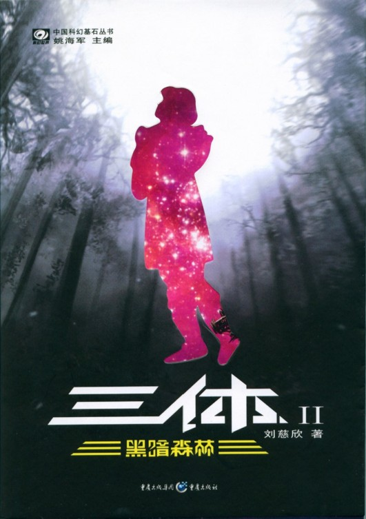
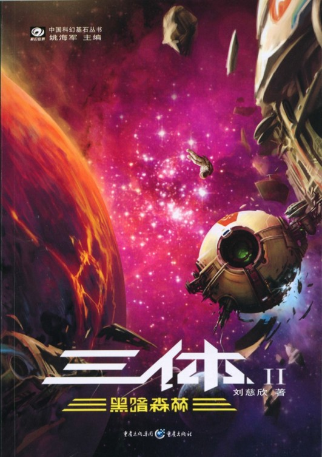
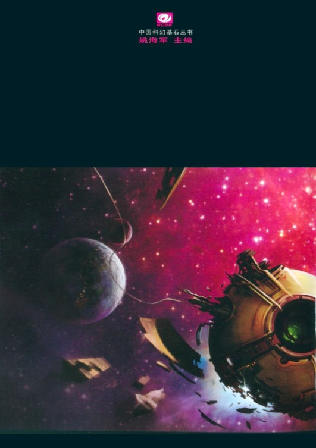
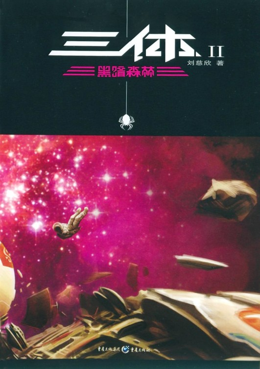

34.虫子
“看完那些，你一定想到了三年前因球状闪电研究发现的宏原子，那可是你最辉煌的时代。”汪淼对丁仪说，他们此时正在丁仪家宽敞空旷的客厅中，两人靠在那张台球桌旁边。
“是啊，我一直在建立宏原子的理论，现在受到了启发：宏原子很可能就是普通原子在低维度的展开。这种展开是由某种我们不知道的自然力完成的，展开可能发生在宇宙大爆炸后不久，也可能现在仍然时时刻刻都在进行。也许，这个宇宙所有的原子在漫长的时间里最后都会展开到低维，我们宇宙的最终结局是变成低维度原子构成的宏宇宙，这也可以看作一个熵的增长过程吧……当时以为，宏原子的发现能给物理学带来突破，现在看来根本不是那么回事。”丁仪说，起身到书房去翻找什么。
“为什么呢？既然我们可以捕获宏原子，难道不能绕开高能加速器，直接从宏原子中研究物质的深层结构吗？”
“当初是这么想的，”丁仪从书房中走出来，手里拿着一个精致的银边相框，“现在看来很可笑。”他弯腰从脏乱的地板上拾起一个烟头，“还是看这个过滤嘴吧，我们说过它的二维面积展开来有客厅这么大，但要是真的展开了，你能从那个平面上研究出过滤嘴曾经的三维结构吗？显然不可能，那些三维结构的信息在展开时已经消失了，像打碎了的杯子不可能还原，原子在自然状态下的低维展开是不可逆的过程。三体科学家的高明之处，在于他们对粒子低维展开的同时保留了高维结构的信息，使整个过程成为可逆。而我们要想研究物质深层结构，还只能从十一维微观维度开始，也就是说，离不开加速器。打个比方：加速器是我们的算盘和计算尺，只有通过它们，我们才可能发明出电子计算机来。”
丁仪让汪淼看那个相框中的照片。照片上，一名年轻美丽的少校女军官站在一群孩子中间，她目光清澈，动人地微笑着。她和孩子们站在一片修剪得很好的绿草坪上，上面有几只白色的小动物。在他们的后面，有一幢很高大的厂房一样的建筑，墙上画着色彩鲜艳的卡通动物，还有气球、鲜花什么的。
“在杨冬之前认识的？你的生活够丰富的。”汪淼看着照片说。
“她叫林云，对球状闪电研究和宏原子的发现做出过关键性的贡献，可以说，没有她，就没有这个发现。”
“我没有听说过她啊。”
“是啊，因为一些你同样没听说的事情……不过我一直觉得这对她不公平。”
“她现在在哪儿？”
“在……在一个地方，或一些地方……唉，她要是现在能出现有多好。”
对丁仪奇怪的回答，汪淼没有在意，他对照片上的那个女性并不感兴趣，他把相框还给丁仪，一摆手说：“无所谓，一切都无所谓了。”
“是啊，一切都无所谓了。”丁仪把相框在台球桌上端正地摆好，看着他，伸手去够桌角的一瓶酒……
当史强推门进来时，两人已经喝得有八分醉了，他们看到大史后都很兴奋。汪淼站起来搂住来者的双肩，“啊，大史，史警官……”丁仪则晃晃悠悠地找了个杯子放到台球桌上，给他倒酒，“你那个邪招还不如不出。那个信息，我们看不看，四百多年后的结果都一样。”
大史在台球桌前坐下来，两眼贼溜溜地看看两人：“事情真像你们说的那样，什么都完了？”
“当然，什么都完了。”
“加速器不能用，物质结构不能研究，就什么都完了？”
“那你——说呢？”
“技术不还是在进步嘛，汪院士他们还搞出了纳米材料……”
“想象一个古代的王国，他们的技术也在进步，能为士兵造出更好的刀啊剑啊长矛啊，甚至还有可能造出像机关枪那样连发的弓箭呢，但……”
大史若有所思地点点头，“但如果他们不知道物质是由原子、分子组成的，就永远造不出导弹和卫星，科学水平限制着呢。”
丁仪拍拍大史的肩，“我早就看出来史警官是个聪明人，就是看着……”
汪淼接着说：“物质深层结构的研究是其他一切科学基础的基础，如果这个没有进展，什么都是——用你的说法：扯淡。”
丁仪指指汪淼，“汪院士这辈子还不会闲着，能继续改进刀啊剑啊长矛啊。我他妈的以后干什么？天知道！”说着他把一个空酒瓶扔到桌上，捡起台球丢过去砸。
“这是好事！”汪淼举起酒杯说，“我们这辈子反正能打发完，今后，颓废和堕落有理由了！我们是虫子！即将灭绝的虫子，哈哈……”
“说得好！”丁仪也举起酒杯，“为虫子干杯！真没想到世界末日是这么的爽，虫子万岁，智子万岁！末日万岁！”
大史摇摇头，把面前的那杯酒一口干了，又摇摇头，“熊样儿。”
“那你要咋的？”丁仪用醉眼盯着大史说，“你能让我们振作起来？”
大史站了起来，“走。”
“去哪儿？”
“找振作啊。”
“得了史兄，坐下，喝。”
大史扯着两人的胳膊把他们拽起来，“走，不行就把酒拿上。”
下楼后，三人上了大史的车。当车开动时，汪淼大着舌头问去哪儿，大史回答：“我老家，不远。”
车开出了城市，沿京石高速向西疾驶，刚刚进入河北境内就下了高速公路。大史停下了车，把车里的两人拖出来。丁仪和汪淼一下车，午后灿烂的阳光就令他们眯起了眼，覆盖着麦田的华北大平原在他们面前铺展开来。
“你带我们来这儿干什么？”汪淼问。
“看虫子。”大史点上一支斯坦顿上校送的雪茄说，同时用雪茄指指面前的麦田。
汪淼和丁仪这才发现，田野被厚厚的一层蝗虫覆盖了，每根麦秆上都爬了好几只，地面上，更多的蝗虫在蠕动着，看去像是一种黏稠的液体。
“这地方也有蝗灾了？”汪淼赶走田埂一小片地上的蝗虫，坐了下来。
“像沙尘暴一样，十年前就有了，不过今年最厉害。”
“那又怎么样？大史，什么都无所谓了。”丁仪带着未消的醉意说。
“我只想请二位想一个问题：是地球人与三体人的技术水平差距大呢，还是蝗虫与咱们人的技术水平差距大？”
这个问题像一瓢冷水泼在两名醉汉科学家头上，他们盯着面前成堆的蝗虫，表情渐渐凝重起来，两人很快就明白了大史的意思。
※※※
看看吧，这就是虫子，它们的技术与我们的差距，远大于我们与三体文明的差距。人类竭尽全力消灭它们，用尽各种毒剂，用飞机喷洒，引进和培养它们的天敌，搜寻并毁掉它们的卵，用基因改造使它们绝育；用火烧它们，用水淹它们，每个家庭都有对付它们的灭害灵，每个办公桌下都有像苍蝇拍这种击杀它们的武器……这场漫长的战争伴随着整个人类文明，现在仍然胜负未定，虫子并没有被灭绝，它们照样傲行于天地之间，它们的数量也并不比人类出现前少。把人类看做虫子的三体人似乎忘记了一个事实：虫子从来就没有被真正战胜过。
太阳被一小片黑云遮住了，在大地上投下一团移动的阴影。这不是普通的云，是刚刚到来的一大群蝗虫，它们很快开始在附近的田野上降落，三个人沐浴在生命的暴雨之中，感受着地球生命的尊严。丁仪和汪淼把手中拎着的两瓶酒徐徐洒到脚下的华北平原上，这是敬虫子的。
“大史，谢谢你。”汪淼向大史伸出手去。
“我也谢谢你。”丁仪握住了大史的另一只手。
“我们快回去吧，有好多工作要做呢。”汪淼说。
35.尾声·遗址
谁也不相信叶文洁能够凭着自己的体力再次登上雷达峰，但她最后还是做到了，一路上没有让别人搀扶，只是在山腰间已经废弃的岗亭中休息了两次。她在毫不怜惜地消耗着自己已不可再生的生命力。
得知三体文明的真相后，叶文洁沉默了，很少说话，她只提了一个要求：想回红岸基地遗址看看。
当一行人登上山时，雷达峰的峰顶刚刚探出云层，在阴霾的雾气中行走了一天，现在一下子看到了在西天灿烂照耀着的太阳和湛蓝的晴空，真像登入另一个世界。
从峰顶上极目望去，云海在阳光下一片银白，那起伏的形状，仿佛是云下的大兴安岭某种形而上的抽象再现。
人们想象中的废墟并不存在，基地被拆除得十分彻底，峰顶只剩下一片荒草，地基和道路都被掩于其下，看上去只是一片荒野，红岸的一切仿佛从未发生过。
但叶文洁很快发现了一处遗迹，她走到一块高大的岩石边，拨开上面丛生的藤蔓，露出了斑驳的铁锈，其他人这才发现“岩石”原来是一个巨大的金属基座。
“这是天线的基座。”叶文洁说。地球文明被外星世界听到的第一声呼唤，就是通过这个基座上的天线发向太阳，再由太阳放大后向整个宇宙转发的。
人们在基座旁发现了一块小小的石碑，它几乎完全被野草埋没，上书：
红岸基地原址
（1968～1987）
中国科学院
1989.03.21
碑是那么小，与其说是为了纪念，更像是为了忘却。
叶文洁走到悬崖边，她曾在这里亲手结束了两个军人的生命。她并没有像其他同行的人那样眺望云海，而是把目光集中到一个方向，在那一片云层下面，有一个叫齐家屯的小村庄……
叶文洁的心脏艰难地跳动着，像一根即将断裂的琴弦，黑雾开始在她的眼前漫涌，她用尽生命的最后能量坚持着，在一切都没入永恒的黑暗之前，她想再看一次红岸基地的日落。
在西方的天际，正在云海中下沉的夕阳仿佛被融化了，太阳的血在云海和天空中弥漫开来，映现出一大片壮丽的血红。
“这是人类的落日……”叶文洁轻轻地说。
后 记
如果存在外星文明，那么宇宙中有共同的道德准则吗？往小处说，这是科幻迷们很感兴趣的一个问题；往大处说，它可能关乎人类文明的生死存亡。
二十世纪八十年代的国内科幻作家们是倾向于肯定的回答的，那时的科幻小说中，外星人都以慈眉善目的形象出现，以天父般的仁慈和宽容，指引着人类这群迷途的羔羊。金涛的《月光岛》中，外星人抚慰着人类受伤的心灵；童恩正《遥远的爱》中人类与外星人的爱情凄美而壮丽；郑文光的《地球镜像》中，人类道德低下，甚至把技术水平高出几个数量级但却怀有菩萨心肠的外星文明吓跑了！
但是，“人之初，性本善”之说在人类世界都很可疑，放之宇宙更不可能皆准。
要回答宇宙道德的问题，只有通过科学的理性思维才能让人信服。这里我们能很自然地想到，可以通过人类世界各种不同文明的演化史来同宇宙大文明系统进行类比，但前者的研究也是十分困难的，有太多的无法定量的因素纠结在一起。相比之下，对宇宙间各文明关系的研究却有可能更定量更数学化一些，因为星际间遥远的距离使各个文明点状化了，就像在体育场的最后一排看足球，球员本身的复杂技术动作已经被距离隐去，球场上出现的只是由二十三个点构成的不断变化的矩阵（有一个特殊的点是球，球类运动中只有足球赛呈现出如此清晰的数学结构，这也可能是这门运动的魅力之一）。
我曾经陷入宇宙文明点状化的这种思维游戏中不可自拔，上世纪九十年代初，为打发时间，我常常编些无聊但自觉有趣的软件，现在网上重新流行的电子诗人就是那时的产物。那个时期，我还编过一个宇宙点状文明体系总体状态的模拟软件，将宇宙间的智慧文明简化为点，每个点只具有描述该文明基本特征的十几个简单参数，然后将文明的数量设置得十分巨大，在软件中模拟这个体系的整体演化过程。为此我请教了一位可敬的学者，他是研究电网理论的，是建立数学模型的高手，算不上科幻迷但也是爱好者，他对我那个错误百出的模型进行了修正。软件运行时最多的一次曾在十万光年半径内设定了三十万个文明，这个用现在看来很简陋的TURBO C编的程序在286机上运行了几个小时，结果很有趣。当然，我只是个工程师，没有能力进行这样级别的研究，只是一个科幻迷玩玩儿而已，从科学角度讲得出的结果肯定没什么意义，但从科幻角度讲却极有价值，因为那些结果所展示的宇宙间点状文明的演化图景，不管正确与否，其诡异程度是很难凭空想出来的。
我认为零道德的宇宙文明完全可能存在，有道德的人类文明如何在这样一个宇宙中生存？这就是我写《地球往事》的初衷。
当然，《三体》并没有揭示那个宇宙文明的图景，其中的两大文明自己也没有意识到这个图景，只是揭开了其面纱的一角。比如，既然距我们最近的恒星都有智慧文明，那这个宇宙一定是十分拥挤的，可为什么它看起来却如此空旷？但愿有机会在《地球往事》的第二部中继续描述。
那个将在《地球往事》中渐渐展开的图景，肯定会让敬畏心中道德的读者不舒服，但只是科幻而已，不必当真。:）
从《三体》连载中得知，国内科幻读者喜欢描述宇宙终极图景的科幻小说，这多少让人感到有些意外。我是从八十年代的科幻高潮中过来的，个人认为那时的作家们创造了真正的、以后再也没有成规模出现过的中国式科幻，这种科幻最显著的特点就是完全技术细节化，没有形而上的影子。而现在的科幻迷们已经打开了天眼，用思想拥抱整个宇宙了。这也对科幻小说作者提出了更高的要求，很遗憾《三体》不是这样的“终极科幻小说”。创作《2001》式的科幻是很难的，特别是长篇，很容易成为既无小说的生动，又无科普的正确，更无论文的严谨的一堆空架子，笔者对此还没有信心。
哦，这个设想中的系列叫《地球往事》，没有太多的意思，科幻与其他幻想文学的区别就在于它与真实还牵着一根细线，这就使它成为现代神话而不是童话（古代神话在当时的读者心中是真实的）。所以我一直认为，好看的科幻小说应该是把最空灵最疯狂的想象写得像新闻报道一般真实。往事的回忆总是真实的，自己希望把小说写得像是历史学家对过去的真实记叙，但能不能做到，就是另一回事了。
设想中《地球往事》的下一部暂名为《黑暗森林》，取自八十年代流行过的一句话：“城市就是森林，每一个男人都是猎手，每一个女人都是陷阱。”
哦，最后说的当然是最重要的：谢谢大家！
刘慈欣




三体Ⅱ 黑暗森林
序章
褐蚁已经忘记这里曾是它的家园。这段时光对于暮色中的大地和刚刚出现的星星来说短得可以忽略不计，但对于它来说却是漫长的。
在那个已被忘却的日子里，它的世界颠覆了。泥土飞走，出现了一条又深又宽的峡谷，然后泥土又轰隆隆地飞回来，峡谷消失了，在原来峡谷的尽头出现了一座黑色的孤峰。其实，在这片广阔的疆域上，这种事常常发生，泥土飞走又飞回，峡谷出现又消失，然后是孤峰降临，好像是给每次灾变打上一个醒目的标记。褐蚁和几百个同族带着幸存的蚁后向太阳落下的方向走了一段路，建立了新的帝国。
这次褐蚁来到故地，只是觅食途中偶然路过而已。它来到孤峰脚下，用触须摸了摸这顶天立地的存在，发现孤峰的表面坚硬光滑，但能爬上去，于是它向上爬去。没有什么目的，只是那小小的简陋神经网络中的一次随机扰动所致。这扰动随处可见，在地面的每一株小草和草叶上的每一粒露珠中，在天空中的每一片云和云后的每一颗星辰上……扰动都是无目的的，但巨量的无目的扰动汇集在一起，目的就出现了。
褐蚁感到了地面的震动，从震动由弱变强的趋势来判断，它知道地面上的另一个巨大的存在正在向这里运动，它没有理会，继续向孤峰上攀爬。在孤峰底部和地面形成的直角空间里有一面蛛网，褐蚁知道那是什么，它小心地绕过了粘在悬崖上的蛛丝，从那个缩起所有的腿静等着蛛丝震动的蜘蛛旁经过，它们彼此都感觉到了对方的存在，但同过去的一亿年一样，双方没有任何交流。
震动达到高峰后停止了，那个巨大的存在已经来到了孤峰前，褐蚁看到这个存在比孤峰还要高许多，遮住了很大一部分天空。对这类存在褐蚁并不陌生，它知道他们是活的，常常出现在这片疆域，那些出现后很快就消失的峡谷和越来越多地耸现的孤峰，都与他们有着密切的关系。
褐蚁继续向上攀登，它知道这类存在一般不会威胁到自己——当然也有例外。对于已处于下方的那个蜘蛛，这种例外已经出现，那个存在显然发现了孤峰与地面之间的蛛网，用一个肢体上拿着的一束花的花柄拂去了它，蜘蛛随着断开的蛛丝落到了草丛中。然后，他把花轻轻地放在了孤峰前。
这时。另一个震动出现了，很微弱，但也在增强中。褐蚁知道，另一个同类型的存在正在向孤峰移动。与此同时，在前方的峭壁上，它遇到了一道长长的沟槽，与峭壁表面相比，沟槽的凹面粗糙一些，颜色也不同，呈灰白色，它沿着沟槽爬，粗糙的表面使攀登容易了许多。沟槽的两端都有短小的细槽。下端的细槽与主槽垂直，上端的细槽则与主槽成一个角度相交。当褐蚁重新踏上峭壁光滑的黑色表面后，它对槽的整体形状有了一个印象：“1”。
这时，孤峰前的活着的存在突然矮了一半，与孤峰的高度相当了，他显然是蹲下了，在露出的那片暗蓝的天空中，星星已经开始稀疏地出现。他的眼睛看着孤峰的上端，褐蚁犹豫了一下，决定还是不要直接进入他的视线，于是转向沿着与地面平行的方向爬。很快，它遇到了另一道沟槽，它很留恋沟槽那粗糙的凹面，在上面爬行感觉很好，同时槽面的颜色也让它想起了蚁后周围的蚁卵。它不惜向下走回头路，沿着槽爬了一趟。这道槽的形状要复杂些，很弯曲，转了一个完整的圈后再向下延伸一段，让它想起在对气味信息的搜寻后终于找到了回家的路的过程，它在自己的神经网络中建立起了它的形状：“9”。
这时，蹲在孤峰前的存在发出了声音，这串远超出褐蚁理解力的话是这样的：
“活着本身就很妙，如果连这道理都不懂，怎么去探索更深的东西呢？”
他发出穿过草丛的阵风那样的空气流动的声音，那是叹息，然后他站了起来。
褐蚁继续沿着与地面平行的方向爬，进入了第三道沟槽，它是一个近似于直角的转弯，是这样的：“7”。它不喜欢这形状，平时，这种不平滑的、突然的转向，往往意味着危险和战斗。
话声掩盖了震动，褐蚁这时才感觉到第二个活着的存在已经来到了孤峰前，第一个存在站起来就是为了迎接她。第二个存在比第一个要矮小瘦弱许多，有一头白发，白发在暮空暗蓝的背景上很醒目，那团在微风中拂动的银色似乎与空中越来越多的星星有某种联系。
“叶老师，您……您来了？”
“你是……小罗吧？”
“我是罗辑，杨冬的高中同学，您这是……”
“那天知道了这个地方，很不错的，坐车也方便，最近常来这儿散散步。”
“叶老师，您要节哀啊。”
“哦，都过去了……”
孤峰上的褐蚁本来想转向向上攀登，但发现前面还有一道凹槽，同在“7”之前爬过的那个它喜欢的形状“9”一模一样，它就再横行过去，爬了一遍这个“9”。它觉得这个形状比“7”和“1”好，好在哪里当然说不清，这是美感的原始单细胞态；刚才爬过“9”时的那种模糊的愉悦感再次加强了，这是幸福的原始单细胞态。但这两种精神的单细胞没有进化的机会，现在同一亿年前一样，同一亿年后也一样。
“小罗啊，冬冬常提起你，她说你是……搞天文学的？”
“以前是，现在我在大学里教社会学，就在您那所学校，不过我去时您已经退休了。”
“社会学，跨度这么大？”
“是，杨冬总说我这人心很散。”
“哦，怪不得她说你很聪明的。”
“小聪明而已，和您女儿不在一个层次。只是感觉天文专业是铁板一块，在哪儿钻个眼儿都不容易；而社会学之类的是木板，总能找些薄的地方钻透的，比较好混吧。”
抱着再遇到一个“9”的愿望，褐蚁继续横行，但前面遇到的却是一道直直的与地面平行的横槽，好像是第一道槽横放了，但它比“1”长，两端没有小细槽，呈“—”状。
“不要这么说，这是正常人的生活嘛，都像冬冬那样怎么行。”
“我这人确实胸无大志，很浮躁的。”
“我倒是有个建议：你为什么不去研究宇宙社会学呢？”
“宇宙社会学？”
“我随便说的一个名词，就是假设宇宙中分布着数量巨大的文明，它们的数目与能观测到的星星是一个数量级的，很多很多，这些文明构成了一个总体的宇宙社会，宇宙社会学就是研究这个超级社会的形态。”
孤峰上的褐蚁继续横向爬了不远，期望在爬过形状为“—”的凹槽后再找到一个它喜欢的“9”，但它遇到的是“2”。这条路线前面部分很舒适，但后面的急转弯像前面的“7”一样恐怖，似乎是个不祥之兆。褐蚁继续横爬，下一道凹槽是一个封闭的形状：“0”。这种路程是“9”的一部分，但却是一个陷阱：生活需要平滑，但也需要一个方向，不能总是回副起点，褐蚁是懂这个的。虽然前面还有两道凹槽，但它已失去了兴趣，转身向上攀登。
“可……目前只知道我们这一个文明啊。”
“正因为如此没有人去做这个事情，这就留给你一个机会嘛。”
“叶老师，很有意思！您说下去。”
“我这么想是因为能把你的两个专业结合起来，宇宙社会学比起人类社会学来呈现出清晰的数学结构。”
“为什么这么说呢？”
叶文洁指指天空，西方的暮光仍然很亮，空中的星星少得可以轻易数出来。
这很容易使人回想起一个星星都没有出现时的苍穹，那蓝色的虚空透出一片广阔的茫然，仿佛是大理石雕像那没有瞳仁的眼睑。现在尽管星星很稀少，这巨大的空眼却有了瞳仁。于是空虚有了内容，宇宙有了视觉。但与空间相比，星星都是这么微小，只是一个个若隐若现的银色小点，似乎暗示了宇宙雕刻者的某种不安——他（它）克服不了给宇宙点上瞳仁的欲望，但对宇宙之眼赋予视觉又怀着某种巨大的恐惧，最后，空间的巨大和星星的微小就是这种欲望和恐惧平衡的结果，昭示着某种超越一切的谨慎。
“你看，星星都是一个个的点，宇宙中各个文明社会的复杂结构，其中的混沌和随机的因素，都被这样巨大的距离滤去了，那些文明在我们看来就是一个个拥有参数的点，这在数学上就比较容易处理了。”
“但，叶老师，您说的宇宙社会学没有任何可供研究的实际资料，也不太可能进行调查和实验。”
“所以你最后的成果就是纯理论的，就像欧氏几何一样，先设定几条简单的不证自明的公理，再在这些公理的基础上推导出整个理论体系。”
“叶老师，这……真是太有意思了，可是宇宙社会学的公理是什么呢？”
“第一，生存是文明的第一需要；第二，文明不断增长和扩张，但宇宙中的物质总量保持不变”
褐蚁向上爬了不远，才知道上方也有凹槽，而且是一堆凹槽的组合，结构像迷宫般复杂。褐蚁对形状是敏感的，它自信能够搞清这个形状，但为此要把前面爬过的那些形状都忘掉，因为它那小小的神经网络存储量是有限的。它忘掉“9”
没有感到遗憾，不断地忘却是它生活的一部分，必须终身记住的东西不多，都被基因刻在被称做本能的那部分存储区了。
清空记忆后，它进入迷宫，经过一阵曲折的爬行，它在自己简陋的意识中把这个形状建立起来：“墓”。再向上，又是一个凹槽的组合，但比前一个简单多了，不过为了探索它，褐蚁仍不得不清空记忆，忘掉“墓”。它首先爬进一道线条优美的槽，这形态让它想起了不久前发现的一只刚死的蝈蝈的肚子。它很快搞清了这个结构：“之”。以后向上的攀登路程中，又遇到两个凹槽组合。前一个中包括两个水滴状的坑和一个蝈蝈肚子——“冬”；最上面的一个分成两部分，组合起来是“杨”。这是褐蚁最后记住的一个形状，也是这段攀登旅程中唯一记住的一个，前面爬过的那些有趣的形状都忘掉了。
“叶老师，从社会学角度看，这两条公理都是足够坚实的……您这么快就说出来，好像胸有成竹似的。”罗辑有些吃惊地说。
“我已经想了大半辈子，但确实是第一次同人谈起这个，我真的不知道为什么要谈……哦，要想从这两条公理推论出宇宙社会学的基本图景，还有两个重要概念：猜疑链和技术爆炸。”
“很有意思的两个名词，您能解释一下吗？”
叶文洁看看表：“没有时间了，其实你这样聪明，自己也能想出来，你可以先从这两条公理着手创立这门学科，那你就有可能成为宇宙社会学的欧几里得了。”
“叶老师，我成不了欧几里得，但会记住您的话，试着去做做，以后我可能还会去请教您。”
“怕没有机会了……或者，你就当我随便说说，不管是哪种情况，我都尽了责任。好，小罗，我走了。”
“……叶老师，您保重。”
叶文洁在暮色中离去，走向她那最后的聚会。
褐蚁继续攀登，进入了峭壁上的一个圆池，池内光滑的表面上有一个极其复杂的图像，它知道自己那小小的神经网络绝对无力存储这样的东西，但了解了图像的大概形状后，它又有了对“9”的感觉，原细胞态的美感又萌动了一下。而且它还似乎认出了图像中的一部分，那是一双眼睛，它对眼睛多少有一些敏感，因为被眼睛注视就意味着危险。不过此时它没有什么忧虑，因为它知道这双眼睛没有生命。它已经忘记了那个叫罗辑的巨大的存在在第一次发出声音前蹲下来凝视孤峰上端的情形，当时他凝视的就是这双眼睛。接着，它爬出圆池，攀上峰顶。在这里，它并没有一览众山小的感觉，因为它不怕从高处坠落，它曾多次被风从比这高得多的地方吹下去，但毫发无损，没有了对高处的恐惧就体会不到高处之美。
在孤峰脚下，那只被罗辑用花柄拂落的蜘蛛开始重建蛛网，它从峭壁上拉出一根晶莹的丝，把自己像钟摆似的甩到地面上。这样做了三次，网的骨架就完成了。网被破坏一万次它就重建一万次，对这过程它没有厌烦和绝望，也没有乐趣，一亿年来一直如此。
罗辑静立了一会儿，也走了。当地面的震动消失后，褐蚁从孤峰的另一边向下爬去，它要赶回蚁穴报告那只死甲虫的位置。天空中的星星密了起来，在孤峰的脚下，褐蚁又与蜘蛛交错而过，它们再次感觉到了对方的存在，但仍然没有交流。
褐蚁和蜘蛛不知道，在宇宙文明公理诞生的时候，除了那个屏息聆听的遥远的世界，仅就地球生命而言，它们是仅有的见证者。
※※※
更早一些的时候，深夜，麦克·伊文斯站在“审判日”号的船首，星空下的太平洋像一块黑色的巨缎在下面滑过。伊文斯喜欢在这种时候与那个遥远的世界对话，因为在星空和夜海的背景上，智子在视网膜上打出的字很醒目。
字幕：这是我们的第二十二次实时对话了，我们在交流上遇到一些困难。
伊文斯：“是的，主，我发现我们发给您的人类文献资料，有相当部分您实际上没有看懂。”
字幕：是的，你们把其中的所有元素都解释得很清楚，但整体上总是无法理解，好像是因为你们的世界比我们多了什么东西，而有时又像是少了什么东西。
伊文斯：“这多的和少的是同一样东西吗？”
字幕：是的，我们不知道是多了还是少了。
伊文斯：“那会是什么呢？”
字幕：我们仔细研究了你们的文献，发现理解困难的关键在于一对同义词上。
伊文斯：“同义词？”
字幕：你们的语言中有许多同义词和近义词，以我们最初收到的汉语而言。就有“寒”和“冷”，“重”和“沉”，“长”和“远”这一类，它们表达相同的含义。
伊文斯：“那您刚才说的导致理解障碍的是哪一对同义词呢？”
字幕：“想”和“说”，我们刚刚惊奇地发现，它们原来不是同义词。
伊文斯：“它们本来就不是同义词啊。”
字幕：按我们的理解，它们应该是同义词：想，就是用思维器官进行思维活动；说，就是把思维的内容传达给同类。后者在你们的世界是通过被称为声带的器官对空气的振动波进行调制来实现的。这两个定义你认为正确吗？
伊文斯：“正确，但由此不正表明‘想’和‘说’不是同义词吗？”
字幕：按照我们的理解，这正表明它们是同义词。
伊文斯：“您能让我稍稍想一想吗，”
字幕：好的，我们都需要想一想。
伊文斯看着星光下涌动的洋面思考了两分钟。
伊文斯：“我的主，你们的交流器官是什么？”
字幕：我们没有交流器官，我们的大脑可以把思维向外界显示出来，这样就实现了交流。
伊文斯：“显示思维，怎样实现呢？”
字幕：大脑思维发出电磁波，包括我们的可见光在内的各种波长，可以在相当远的距离上显示。
伊文斯：“也就是说，对你们而言，想就是说。”
字幕：所以说它们是同义词。
伊文斯：“哦……但即使如此，应该也不会造成对文献理解的障碍。”
字幕：是的，在思维和交流方面我们之间的差异并不大，我们都有大脑。而且大脑揶是以巨量神经元互联的方式产生智能，唯一的区别是我们的脑电波更强，能直接被同类接收，因而省去了交流器官，就这么一点差异。
伊文斯：“不，这中间可能还隐藏着更大的差异。我的主，请让我再想一想。”
字幕：好的。
伊文斯离开了船首，在甲板上漫步着，船舷外，太平洋仍在夜色中无声地起伏着，他把它想象成一个正在思维的大脑。
伊文斯：“主，我想给你讲一个小故事，作为准备，您理解以下的元素吗：狼、孩子、外婆、林中的小屋。”
字幕：这都是很好理解的元素，只是关于外婆，我知道是人类的一种血缘关东，通常她的年纪较大。她在血缘结构中的位置还需要你解释一下。
伊文斯：“主，这不重要。您只需要知道她与孩子们的关系是很亲密的，她是孩子们最信任的人之一。”
字幕：理解。
伊文斯：“我把故事简化了一下：外婆有事外出，把孩子们留在小屋里，嘱咐他们一定要关好门，除了她之外不要给别人开门。外婆在路上遇到了狼，狼把外婆吃了，并穿上她的衣服装扮成她的样子，来到小屋前叫门。狼对屋里的孩子们说我是你们的外婆，我回来了，请把门打开。孩子们透过门缝看到它是外婆的样子，就把门打开了，狼进入小屋把孩子们也都吃了。主，您能理解这个故事吗？”
字幕：完全无法理解。
伊文斯：“那我可能猜对了。”
字幕：首先，狼一直想进入小屋吃掉孩子们，是吗？
伊文斯：“是的。”
字幕：它与孩子们进行了交流，是吗？
伊文斯：“是的。”
字幕：这就不可理解了，为了达到自己的目的，它不应该与孩子们交流的。
伊文斯：“为什么？”
字幕：这不是很明显的事吗？如果他们之间进行交流，孩子们就会知道狼要进屋吃掉他们的企图，当然就不会给狼开门了。
伊文斯（沉默良久）：“我明白了，主，我明白了。”
字幕：你明白了什么？这一切不都是很明白的吗？
伊文斯：“你们的思维对外界是完全暴露的，不可能隐藏。”
字幕：思维怎么能隐藏呢？你的想法太不可思议了。
伊文斯：“就是说，你们的思维和记忆对外界是全透明的，像一本放在公共场合的书，或者说是在广场上放映的电影，或者像一个全透明鱼缸里的鱼，完全暴露，可以从外界一览无遗。哦，我上面说的一些元素您可能……”
字幕：我都理解，这一切不是很自然的吗？
伊文斯（沉默良久）：“原来是这样……我的主，当你们面对面交流时，所交流的一切都是真实的，不可能欺骗，不可能撒谎，那你们就不可能进行复杂的战略思维。”
字幕：不只是面对面，我们可以在相当远的距离上交流。另外，欺骗和撒谎这两个词我们一直难以理解。
伊文斯：“一个思想全透明的社会是怎样的社会，会产生怎样的文化、怎样的政治？你们没有计谋，不可能伪装。”
字幕：计谋和伪装是什么？
伊文斯：“……”
字幕：人类的交流器官不过是一种进化的缺陷而已，是对你们大脑无法产生强思维电波的一种不得已的补偿，是你们的一种生物学上的劣势，用思维的直接显示，当然是效率更高的高级交流方式。
伊文斯：“缺陷？劣势？不，主，您错了，这一次，您是完完全全地错了。”
字幕：是吗？让我也想一想吧，很可惜，你看不到我的思想。
这一次对话的间隔时间很长，字幕有二十分钟没有出现，伊文斯已经从船首踱到船尾了。他看到有一队鱼不断地从海里跃出，在海面上方划出一条在星光下银光闪闪的弧线。几年前，为了考察过度捕捞对沿海物种的影响，他曾经在南中国海的渔船上待过一段时间，渔民们把这种景象叫“龙兵过”，伊文斯现在感觉那很像映在海洋瞳孔上的字幕。这时，他自己眼睛中的字幕也出现了。
字幕：你是对的，现在回想那些文献，我有些懂了。
伊文斯：“我的主，你要真正弄懂人类的那些东西，还有很长的路要走，我甚至怀疑，您最终是否有可能弄懂。”
字幕：是的，真的是太复杂，我现在只是知道了自己以前为什么不理解你是对的。
伊文斯：“我的主，您需要我们。”
字幕：我害怕你们。
对话中断了，这是伊文斯最后一次收到来自三体世界的信息。这时他站在船尾，看着“审判日”号的雪白的航迹延伸到迷蒙的夜幕中，像流逝的时间。
上部 面壁者
危机纪年第3年，三体舰队距太阳系4.21光年
怎么看上去这么旧啊……
面对着“唐”号正在建造的巨大舰体，吴岳心中首先浮上来的是这样一个念头。其实，他当然知道由于航母舰壳采用最新的汽液保护焊接工艺，会在锰钢板上产生大量并无大碍的污迹。加上闪动的焊弧光产生的效果，才使得即将完工的舰体看上去是他眼前这个样子。他努力让自己想象出“唐”号涂上灰色船漆后那崭新伟岸的样子，但并不成功。
为“唐”号进行的第四次近海编队训练刚刚完成，在这次为期两个月的航行中，吴岳和站在他身旁的章北海成了两个尴尬的角色。由驱逐舰、潜艇和补给舰组成的编队归战斗群司令官指挥，他们将要指挥的“唐”号还在建造船坞之中，航空母舰本来要处于的位置由“郑和”号训练舰填补，有时干脆就空着。这期间吴岳常常在指挥舰上盯着那片空海发呆，那一片水面上，只有前方舰艇留下的航迹在交错中不安地躁动着，恰似他的心绪。这片空白最后真的能填上吗？他不止一次地问自己。
现在再看看建造中的“唐”号，他看到的已不仅仅是旧了，它甚至有一种古老的沧桑。面前的“唐”号仿佛是一座被废弃的古代巨型要塞，斑驳的舰体就是要塞高大的石墙，从密密的脚手架上垂下的一缕缕焊花好像是覆盖石墙的植物……
这不像是建造，倒像是考古……吴岳怕自己再想下去，于是把注意力转移到旁边的章北海身上。
“父亲的病怎么样了？”吴岳问。
章北海轻轻摇摇头：“不好，也就是维持吧。”
“你请个假吧。”
“他刚住院时我已经请过一次了，现在这形势，到时候再说吧。”
然后两人就又沉默了，他们之间每一次关于个人生活的交流都是这样，关于工作的谈话肯定会多一些，但也总是隔着一层东西。
“北海，以后的工作在分量上可不比以前，既然我们一起到了这个位置上，我想我们之间应该多沟通沟通。”吴岳说。
“我们以前应该是沟通得很好吧，上级既然把我们俩一起放到‘唐’号上，肯定也是考虑了咱们以前在‘长安’号上成功的合作。”
章北海笑笑说，仍然是那种让吴岳看不懂的笑，但他可以肯定这微笑是发自内心的，既然发自内心的东西都看不懂，那就根本没希望懂得他这个人了。成功的合作不等于成功的了解。当然，吴岳自己在章北海的眼中肯定是全透明的，从舰上的水兵到他这个舰长，章北海总是能轻易地看到他们内心深处，他肯定是最称职的政委。章北海在工作上也是很坦诚的，对于舰长，每件事前前后后都有很详细的交底。但他的内心世界对吴岳一直是一片深不见底的灰色，他总给吴岳这样的感觉：就这样做吧。这样做最好或最正确，但这不是我所想的。这种感觉开始只是隐隐约约，后来越来越明显。当然，章北海做的往往是最好或最正确的，但他是怎么想的，吴岳就不知道了。吴岳一直坚持这样一个信条：在战舰指挥这个艰险的岗位上，两个指挥员必须很好地了解对方的思维方式，所以这一点一直是吴岳心中的一个疙瘩。开始，他以为这是章北海对自己的某种防范，感到很委屈：在驱逐舰长这个不上不下的艰难岗位上，还有谁比自己更坦诚更没心计吗？
我有什么可防的？章北海的父亲在一段不长的时间里曾经是他们的上级，关于自己和政委的沟通问题，吴岳曾和他谈过一次。
“工作搞好就行了嘛，为什么非要知道他的思维方式呢？”将军淡淡地说，然后又有意无意地补上一句，“其实，连我都不知道。”
“我们到近处看看吧。”章北海指指缀满焊花的“唐”号说，正在这时他们的手机同时响了，有短信提示他回到车上，机要通讯设备只能在车上使用，一般是有急事发生才用上这个。吴岳拉开车门拿起话筒，来电话的是战斗群总部的一位参谋。
“吴舰长，舰队司令部给你和章政委的紧急命令：你们二位立刻去总参报到。”
“去总参？那第五次编队训练呢？战斗群已经有一半在海上，其余的舰艇明天也要起航加入了。”
“这我不知道，命令很简单，就这一项，具体内容你们回来看吧。”
还没下水的“唐”号航空母舰的舰长和政委对视了一下，这么多年，他们难得地相互心领神会：看来，那一小片海面要一直空下去了。
※※※
阿拉斯加格里利堡。几只在雪原上悠闲漫步的扁角鹿突然警觉起来。它们感觉到了雪下的地面传来的震动。前方那银白色的半球裂开了，那东西很早就在那里，像一枚半埋在地下的大蛋，扁角鹿们一直觉得那东西不属于这个寒冷的世界。
裂开的蛋里首先喷出浓烟和烈火，接着在巨响中孵化出一个上升的圆柱体。那圆柱体从地下钻出后拖着烈焰迅速升高，灼热的气流吹起漫天的积雪，落下时变成了一阵雨。当圆柱体升上高空时，扁角鹿们发现刚才那令它们恐惧的暴烈景象变得平和了，那个圆柱体拖着一根长长的白色尾迹在高空中消失，仿佛下面的雪原就是一个大白线团，一只看不见的巨手从线团中抽出一根线拉向太空。
“见鬼！就差几秒钟，我就能确定中止发射了！”
在千里之外的科罗拉多州斯普林斯，夏延山地下三百米，北美防空司令部指挥中心，NMD系统控制室，目标甄别员雷德尔把鼠标一扔说。
“系统警报出现时我就猜到不是那么回事。”轨道监测员琼斯摇摇头说。
“那系统攻击的是什么？”斐兹罗将军问，NMD只是他新的职责所涉及的一部分，他并不熟悉，看着那布满一面墙壁的显示屏，将军力图找出在NASA的控制中心能看到的那种直观画面：一条红线像懒洋洋的蛇一般在世界地图上移动，虽然由于地图的平面转换，那条线最终会形成一条令外行费解的正弦波，但至少可以让人感觉到有东西在射向太空。可是这里没有这种直观图像，每块显示屏上的曲线都是抽象而杂乱的一团，在他看来毫无意义，更不要提那些飞快滚动的数字屏幕了。这些东西只有这几个对他似乎缺少足够尊敬的NMD值勤军官才能看懂。
“将军，您还记得去年国际空间站的综合舱换过一块反射膜吗，他们当时把换下来的旧膜弄丢了，就是那东西，在太阳风下一会儿展开一会儿团起来。”
“这个……在目标甄别数据库中应该有吧？”
“有，这就是。”雷德尔移动鼠标，调出一个页面，把一堆复杂的文字、数据和表格推上去后，显示出一张不起眼的照片。可能是地面望远镜拍摄的，黑色的背景上有一块银白色的不规则物，由于它表面很强的反光而看不清细节。
“少校，居然有甄别数据，你为什么不中止发射程序？”
“目标数据库本来是由系统自动检索识别的，人工反应根本来不及，但这一部分数据还没有从旧系统的格式中转换过来，所以没有链接到系统识别模块上。”雷德尔的话带着委屈：我用手代替NMD的超级计算机，这么快就检索出来，这是业务熟练的表现，结果反而受你这种外行的质问。
“将军，NMD将拦截方向转向太空后，软件系统现在还没有调整完毕，就受命切换到实战运行状态。”一名值勤军官说。
斐兹罗没有再说话，控制室中嘀嘀嗒嗒的声音现在让他很心烦。他所面对的，是人类建立的第一个地球防御系统——只是把已有的NMD系统的拦截方向由地球各大洲转向太空。
“我觉得大家应该照张像纪念一下！”琼斯突然兴奋起来，“这应该是人类对共同敌人的第一次攻击！”
“这里禁止带相机。”雷德尔冷冷地说。
“上尉，你在胡说什么？”斐兹罗突然生气了，“系统检测到的根本不是敌方目标，怎么成了第一次攻击？”
在一阵尴尬的沉默后，有人说：“拦截器上带的是核弹头。”
“一百五十万吨当量的，怎么了？”
“现在外面天快黑了，按目标的位置，外面应该能看到爆炸闪光的！”
“在监视器上就能看。”
“外面看才有意思！”雷德尔说。
琼斯也兴奋起来，紧张地站起身：“将军，我……我已经交班了。”
“我也是，将军。”雷德尔说，其实请示只是一种礼貌，斐兹罗是地球防御理事会的一名高级协调员，与北美防空中心和NMD都没什么指挥关系。
斐兹罗挥挥手：“我不是你们的指挥官，随便吧，不过我提醒各位：咱们以后还可能长期共事的。”
雷德尔和琼斯以最快的速度从指挥中心升上地面。穿过那扇几十吨重的防辐射门，来到夏延山的山顶。黄昏的天空很清澈，但他们没能看到太空中核爆的闪光。
“应该在那个位置。”琼斯指着天空说。
“可能我们错过了吧。”雷德尔说，没有向上看，脸上露出讥讽的微笑，“他们难道真的相信她会再次低维展开？”
“应该是不可能。它是有智慧的，不会给我们第二次机会。”琼斯说。
“让NMD的眼睛朝上看，地球上真的没有需要防御的东西了？就算是恐怖国家都立地成佛了，不是还有ETO ① 吗？哼……PDC ② 里那帮军方的人显然想尽快有些成绩，斐兹罗就是他们一伙的，现在他们可以声称地球防御系统的第一部分已经建成了，尽管在硬件上几乎什么都不需要做。系统的唯一目标就是防止她在近地轨道空间的低维展开，而达到这个目标所需要的技术，甚至比拦截人类自己的导弹还容易，因为目标如果真的出现，面积将是很大的……上尉，我叫你上来其实就是想说刚才的事儿，你怎么像个不懂事的毛孩子，什么第一次攻击啦照相啦之类的，你惹将军不高兴了，你知道吗？你还看不出他是个小心眼儿的人？”
“可……我那么说不是恭维他吗？”
“他是军方最会向外界作秀的人之一，才不会在新闻发布会上说这是系统误判呢……他会同他们一起把这事儿说成是一次成功的演习，你等着瞧吧，肯定是这样的。”雷德尔说着，一屁股坐到地上，双手向后撑着地面，仰头看着已经出现星星的天空，一脸向往的神情，“琼斯，你说她要是真的再展开一次，给我们一次摧毁她的机会，那有多好！”
“有什么用？已经证实后续的它们正在源源不断地到达太阳系。谁知道现在有多少了……我说，你怎么总是称‘她’，而不是‘它’或‘他’呢？”
雷德尔仍仰着头，表情变得如梦如幻：“昨天，刚来中心的一个中国上校对我说，在他们的语言中，她的名字像一个日本女人。”
※※※
张援朝昨天办完了退休手续，离开他工作了四十多年的化工厂，用邻居老杨的话说，今天他要开始自己的第二童年了。老杨告诉他，六十岁和十六岁一样，是人生最美好的年龄，在这个岁数上，四五十岁时的负担已经卸下，七八十岁时的迟缓和病痛还没有来临，是享受生活的时候。对老张来说，儿子和儿媳妇都有稳定的工作，儿子结婚晚，但现在老张也眼看着就要抱孙子了；他们老两口本来是买不起这套房子的，但因是拆迁户，所以也买到了，现在已经住了一年多……
想想真的一切都很满足了。但现在，张援朝从他八层楼的窗子望着外面晴朗天空下的城市，心里却没有一点阳光，更别提第二童年的感觉了。现在他不得不承认，关于国家大事的说法，老杨是对的。
邻居杨晋文是退休的中学教师，他常常劝张援朝，要想晚年幸福，就得学新东西，比如上网，小娃娃都能学会，你怎么就不能学呢？他特别指出，你老张最大的缺点就是对外界的什么都不感兴趣，你老伴至少还能在那些滥长甜腻的电视剧前抹抹眼泪，你呢，干脆不看电视。应该关心国家和世界大事，这是充实生活的一部分。要说张援朝也是个老北京了，但在这一点上他不像北京人，这个城市里的一个出租车司机，都能高瞻远瞩滔滔不绝地分析一通国家和世界形势，而他，也许知道国家主席的名字，但总理是谁就不清楚了。张援朝却为此自豪，说我一个普通百姓就是踏踏实实过日子，犯不着关心那些不着边儿的事，反正和我没关系，这一辈子也少了不少烦恼。像你老杨倒是关心国家大事，新闻联播每天坚持看，还在网上为了国家经济政策、国际核扩散趋势这类事和人家争得面红耳赤，也没见政府因此给你涨半分钱退休金。但杨晋文说你这想法很可笑，什么叫不着边儿的事？什么叫和你没关系，我告诉你老张，所有的国家和世界大事，国家的每一项重大决策，联合国的每一项决议，都会通过各种直接或间接的渠道和你的生活发生关系，你以为美国入侵委内瑞拉与你没关系？我告诉你，这事儿对你退休金的长远影响可不止半分钱。对老杨的这副书呆子气，张援朝一笑置之。但现在，他知道杨晋文是对的。
这时门铃响了，来的正是杨晋文，好像刚从外面回来，很悠闲的样子。张援朝看到他如同沙漠中的旅人遇到同行者，拉住不放。
“哎呀，刚才我找你去了，你跑哪儿去了？”
“去早市转了转，见你老伴也在买菜呢。”
“这楼上怎么空荡荡的，像个……陵园似的。”
“今儿又不是休息日，可不就这样儿。呵呵，退休第一天，你这感觉很正常，你又不是领导，他们退了更难受呢……你会很快适应的。走吧，咱们先去社区活动室，看看能玩儿点什么。”
“不不，不是因为退休。是因为……怎么说呢，国家，呵呵，不，世界局势。”
杨晋文指着老张大笑起来：“世界局势，哈哈，这话从你嘴里说出来……”
“是是，我以前是不关心大事，可眼前这事，也太大了！我以前没想过会有这么大的事！”
“老张啊，这说起来挺可笑的，我现在倒是向你看齐了，不关心那些个不着边儿的事儿，你信不信，我已经半个月没看新闻了。我以前关心大事，是因为人类可以对这些事产生影响，可以决定它们的结果，但现在这事儿，谁都没有回天之力，自寻烦恼干什么。”
“那也不能不关心啊，四百年后人就没了！”
“哼，四十多年后你我就没了。”
“那我们都断子绝孙吗？”
“我这方面的观念没你那么重，儿子在美国成家却不想要孩子，我也觉得没什么。至于你张家，不还能延续十几代吗？知足吧。”
张援朝盯着杨晋文看了几秒钟，然后看看挂钟，打开了电视机，新闻频道正在播送整点新闻：
美联社报道：本月29日美国东部时间18点30分，美国国家战略导弹防御系统（NMD）成功地进行了一次摧毁在近地轨道低维展开的智子的试验演习，这是NMD系统将拦截方向转向太空后进行的第三次试验，靶标是去年十月从国际空间站废弃的反射膜。行星防御理事会（PDC）发言人称，带有核弹头的拦截器成功地摧毁了靶标。靶标的面积约为三千平方米，也就是说，在三维展开的智子远未达到足够的面积，以形成对地面人类目标具有威胁的反射镜之前，NMD系统就有把握将其摧毁。
“尽干些没意义的事，智子不会展开了……”杨晋文边说边从老张手里拿遥控器，“换到体育台，可能正在重播欧洲杯半决赛，昨晚我在沙发上睡过去了……”
“回你家看去。”张援朝紧抓着遥控器没给他，接着看下一条新闻：
经301医院负责贾维彬院士治疗的主任医生证实，贾院士的死因是血液肿瘤，即白血病，直接致死原因是病变晚期引发的大出血和器官衰竭，不存在任何异常因素。贾维彬是著名超导专家，曾在常温超导材料领域做出过重大贡献，于本月10日去世。之后社会上出现的贾维彬是死于智子攻击的说法纯属谣传。另据报道，卫生部发言人已经证实，另外几例被传为智子攻击的死亡案例也均是常规疾病和事故所致。为此，本台记者采访了著名物理学家丁仪。
记者：您对目前社会上出现的对智子的恐慌有什么看法？
丁仪：这都是由于缺乏物理学常识造成的。政府和科学界有关人士曾经多次在正式场合作出解释和澄清：智子只是一个微观粒子，虽然拥有很高智能，但由于其微观尺度，对于宏观世界的作用是十分有限的，它对人类的主要威胁就是在高能物理试验中制造错误和混乱的结果，以及通过量子感应网络监视地球世界。
处于微现状态下的智子不可能杀人，也不可能进行其他攻击行动，智子要想对宏观世界产生更大的作用，只有在低维展开状态下才能进行。即使如此，这种作用也是十分有限的，因为低维展开至宏观足度的智子本身是十分脆弱的。在人类已经建立防御系统的今天，它不可能有这种行为，否则只是提供了人类消灭它的极好机会。我认为，主流媒体应该向公众加强这方面的科普宣传，以消除这种没有科学根据的恐慌。
……
张援朝听到客厅有人不敲门就闯了进来，“老张”、“张师傅”地喊着。其实刚才老张听到楼梯上那重锤般的脚步声就知道是谁来了。进来的是苗福全，是住在这一层的另一个邻居。这人是山西的煤老板，在那边开着好几个矿。苗福全比张援朝小几岁，他在北京别处还有更大的房子，在这里只是安置着一个被他包养的年龄和他女儿差不多的四川女子。刚住进来时，张杨两家都不太搭理苗福全，而且还因为他在楼道里乱放东西吵过一次架，但后来发现老苗人虽粗些，还算个不错的人，待人很热情，还通过与物业公司交涉为他们两家摆平了两件麻烦事，三家的关系就渐渐融洽起来。苗福全虽说把生意上的事都交给了儿子，可仍是个大忙人，在这个“家”待的时间不多，平时那套三居室里也只有那个川妹子。
“老苗啊，有个把月不见了，最近哪儿发财啊？”杨晋文问。
苗福全随便拿起个杯子，从饮水机中接了半杯水咕咚咕咚灌下去，抹抹嘴说：
“矿上出了麻烦事，回去打理打理。还发个狗屁的财啊。现在算是战争时期了，政府可是什么都动真格儿的，我以前的那些法儿都不好使了，这矿是开不了多长时间了。”
“苦日子就要来了。”老杨说，眼睛没有离开电视上的球赛。
※※※
这个男人一动不动地躺在床上已经几个小时了，透过地下室的小窗射入的一缕阳光现在已变成了月光，这束阴冷的光线在地上投出的亮斑是这里唯一的光源，房间里的一切在阴暗中都像是用湿冷的灰色石头雕成的。整个房间像个墓穴。
这个人的真名一直不为人知，后来他被称为破壁人二号。
在这段时间里，破壁人二号回顾了自己的一生，确定没有什么遗漏之后，翻动已经躺得麻木的身体，伸手从枕头下抽出手枪，缓缓把枪口凑到自己的太阳穴上。这时，他眼睛中出现了智子的字幕。
字幕：不要这样做，我们需要你。
破壁人二号：“是主吗？这一年来我每天晚上都梦到你的召唤，不过最近没有了，我本来以为自己已经是一个无梦之人了，看来不是的。”
字幕：这不是梦，我在和你实时交谈。
破壁人二号（凄凉地笑笑）：“好了，都结束了，那边肯定是无梦的。”
字幕：需要证实吗？
破壁人二号：“证实那边无梦？”
字幕：证实真的是我。
破壁人二号：“好吧，告诉我一件我不知道的事。”
字幕：你的金鱼都死了。
破壁人二号：“呵，没关系，我很快会和它们在没有黑暗的地方相会。”
字幕：你还是去看看吧。上午。你心烦意乱的时候把吸了一半的烟扔出去，它掉到了鱼缸里，半支烟的尼古丁溶于水后，对鱼是致命的。
破壁人二号猛地睁开了眼，放下枪，翻身下床，刚才的迟钝和恍惚一扫而光。
他摸索着打开台灯，然后去看小桌上的鱼缸，看到五条龙睛金鱼全翻着白肚皮浮在水面，它们中间浮着半支香烟。
字幕：我们再进行第二项证实——伊文斯曾经给你发过一封加密信，但密码变了，他没来得及通知你新的密码就死了，你一直打不开那封信。现在我告诉你密码——CAMEL，就是你毒死金鱼的香烟的牌子。
破壁人二号手忙脚乱地取出笔记本电脑，在等待电脑启动的间隙他已经泪流满面了，“主，我的主，真的是你吗？真的是你吗？”他哽咽着说。电脑启动后，他用ETO内部的专用阅读程序打开那个邮件的附件，密码提示框出现，他输入密码后，文本显示出来，而他已经没有心思细读其内容了，只是跪在那里掩面哭着：“主啊，真的是你，我的主……”稍微平静了一些后，他抬起头泪眼朦胧地说，“对统帅参加的聚会的袭击、巴拿马运河的埋伏，我们都没有得到通知，你们为什么抛弃我们？”
字幕：我们害怕你们。
破壁人二号：“是因为我们思维的不透明吗？这没有必要，要知道，我们所拥有的你们不具备的那些能力：欺骗、诡计、伪装、误导等等。都是用来为你们服务的。”
字幕：我们不知道这是不是真的，假设是真的，这种恐惧照样存在。你们的《圣经》提到过叫蛇的动物，如果这时一条蛇爬到你面前，对你说它是为你服务的，你能因此不害怕和厌恶它吗？
破壁人二号：“如果它说的是真的。我能克服自己的厌恶和恐惧接纳它的。”
字幕：这很难吧。
破壁人二号：“当然，我知道，你们已经被蛇咬过一次了——在实时通讯实现后，对我们的问题你们做出了如此详尽的回答，其中的大部分信息，比如接收到人类发出的第一次信号的过程，还有智子的建造过程，是根本没有必要告诉我们的。我们最初是把这些当做主的信任，现在看来是自作多情了。这对我们来说一直是一件很难理解的事：我们之间的通讯和交流不是通过思维的透明显示进行的，为什么不能对要发送的信息有选择地隐瞒呢？”
字幕：这种选择也是有的，只是隐瞒得没有你们所设想的那么多。事实上我们的世界中也存在不借助思维显示进行的交流和通讯，在技术时代尤其如此，但思维透明已经形成了我们的文化和社会习性，这对于你们来说确实很难理解，就像我们难以理解你们一样。
破壁人二号：“我想在你们的世界，欺骗和计谋不可能一点都没有。”
字幕：有的，只是与你们相比十分简陋。比如在我们世界的战争中，敌对双方也会对自己的阵地进行伪装，但如果敌人对伪装的区域产生了怀疑，直接向对方询问，那他们一般都会得到真相的。
破壁人二号：“这太不可思议了。”
字幕：你们对我们也一样不可思议。你的书架上有一本书，叫《三个王国的故事》 ③ 。
破壁人二号：“你们不可能看懂它吧。”
字幕：也看懂了一小部分，像普通人看一部艰深的数学著作，要经过大量的思考并且充分发挥想象力才能弄懂一点儿。
破壁人二号：“这本书确实充分展示了人类战略计谋所达到的层次。”
字幕：但我们有智子，可以使人类世界的一切都变成透明的。
破壁人二号：“除了人本身的思维。”
字幕：是的，智子看不到思维。
破壁人二号：“你一定知道面壁计划吧。”
字幕：比你知道的要多，它就要付诸实施了，这正是我找你的原因。
破壁人二号：“你对面壁计划怎么看？”
字幕：还是那种感觉，像你们看到了蛇。
破壁人二号：“可是《圣经》中的蛇帮助人类获得了智慧，人类的面壁计划将建立起一个或几个对你们来说极其诡异和险恶的迷宫，我们可以帮助你们走出这些迷宫。”
字幕：这种思维透明度的差别，使我们更坚定了消灭人类的决心。请你们帮助我们消灭人类，最后我们再消灭你们。
破壁人二号：“我的主，你的表达方式有问题，这种表达方式显然是由你们思维透明显示的交流方式决定的。在我们的世界里，即使表达真实的思想，也要用一种适当的和委婉的方式，比如你刚才的话。虽然与ETO的理想是一致的，但过分的直接表达可能会令我们的一部分同志产生反感，进而产生不可预料的后果。当然，那种适当表达方式你可能永远也学不会。”
字幕：正是由于这种对思想变形的表达，使人类社会的交流信息，特别是人类的文学作品，都像是曲折的迷宫……据我所知，ETO到了崩溃的边缘。
破壁人二号：“这都是因为你们对我们的抛弃，那两次打击是致命的。现在，ETO中的拯救派已经分崩离析，只有降临派在维持着组织的存在。这你显然都是知道的，但最致命的打击是在精神上，由于这次抛弃，同志们对主的忠诚正在经受考验，为了维持这种忠诚，ETO急需得到主的支持。”
字幕：我们不可能向你们传递技术。
破壁人二号：“这也不需要，你们只需要恢复以前所做的，向我们传达智子得到的信息。”
字幕：这当然可以，但目前ETO首先要做的，是执行你刚才看到的那个重要使命，那是我们在伊文斯死前发给他的，他给你下达了执行命令，但由于密码问题你没能完成。
破壁人二号这才想起电脑上那封刚解密的信，他仔细看了一遍。
字幕：很容易完成的使命，不是吗？
破壁人二号：“不是太难，但这真的很重要吗？”
字幕：以前十分重要，现在，由于人类的面壁计划，万分重要了。
破壁人二号：“为什么？”
字幕（长时间停顿）：伊文斯知道为什么，但他显然没有告诉任何人。他是对的，这很幸运，现在。我们不能告诉你为什么。
破壁人二号（面露欣喜）：“我的主，你学会隐瞒了！这是一个进步！”
字幕：伊文斯教了我们很多。但我们在这方面仍然很初步，用他的话说仅相当于你们五岁孩子的水平。仅就他发给你们的这条命令而言，其中的一项计谋我们就学不会。
破壁人二号：“你是指的他提出的这项要求吧——不能显示出是ETO做的，以免引起注意。这个嘛，如果目标很重要，这要求是很自然的。”
字幕：在我们看来这是复杂的计谋。
破壁人二号：“好的，我去完成，照伊文斯的要求去完成。主，我们会证明自己的忠诚。”
※※※
在互联网浩瀚的信息海洋中，有一个偏僻的角落，在这个角落里，也有一个偏僻的角落，在这个角落的角落里，还有角落的角落的角落，就在一个最深层的偏僻角落里，那个虚拟的世界复活了。
寒冷而诡异的黎明中，没有金字塔，也没有联合国大厦和单摆，只有广阔而坚硬的荒原延伸开去，像一大块冰冷的金属。
周文王从天边走来，他披着破烂的长袍，外面还裹着一张肮脏的兽皮，带着一把青铜剑，他的脸像那兽皮一样脏和皱，双眼却很有神，眸子映着曙光。
“有人吗？”他喊道，“有人吗？有人吗……”
周文王的声音立刻被这无边的荒漠吞没了，他喊了一阵，疲惫地坐在地上，调快了时间进度，看着太阳变成飞星，飞星又变成太阳，看着恒纪元的太阳像钟摆般一次次划过长空，看着乱纪元的白昼和黑夜把世界变成一个灯光失控的空旷舞台。时光飞逝中，没有沧海桑田的演变，只有金属般永恒的荒漠。三颗飞星在太空深处舞蹈，周文王在严寒中冻成冰柱，很快一颗飞星变成太阳，当那火的巨盘从空中掠过时，周文王身上的冰瞬间融化，他的身体燃成一根火柱，就在完全化为灰烬之前，他长叹一声退出了。
※※※
三十名陆海空军官用凝重的目光注视着深红色帷幔上的那个徽章，它的主体是一颗发出四道光芒的银星，那四道光芒又是四柄利剑的形状，星的两侧有“八一”两字，这就是中国太空军的军徽。
常伟思将军示意大家坐下，把军帽端正地放在面前的会议桌上后，他说：“太空军正式成立的仪式将在明天上午举行，军装和肩章、领章也要那时才能发放到各位手上，不过，同志们，我们现在已经同属一个军种了。”
大家互相看看，发现三十个人中竟有十五人穿着海军军装，空军九人，陆军六人。他们重新把目光集中到常伟思那里时，尽量不使自己的不解表现出来。
常伟思微微一笑说：“这个比例很奇怪，是吗？请大家不要以现在的航天规模来理解未来的太空舰队。将来太空战舰的体积可能比目前的海上航空母舰还大，舰上人员也同样多。未来太空战争就是以这样的大吨位长续航的作战平台为基础，这种战争方式更像海战而不是空战，只是战场由海战的二维变成了太空的三维。所以，太空军种的组建将以海军为主要基础。我知道，在这之前大家普遍认为太空军的基础是空军，所以来自海军的同志们的思想准备可能不足，要尽快适应。”
“首长，我们真的没想到。”章北海说，他旁边的吴岳则一动不动地笔直坐着，章北海敏锐地发现，舰长那平视前方的双眼中，有什么东西熄灭了。
常伟思点点头，“其实，不要把海军与太空的距离想得那么远。为什么是宇宙飞船而不是宇宙飞机呢？为什么是太空舰队而不是太空机群呢，在人们的思想中，太空和海洋早就有联系了。”
会场的气氛放松了一些，常伟思接着说：“同志们，到目前为止这个新军种还只有我们三十一名成员。关于未来的太空舰队，目前所进行的是基础研究工作，各学科的研究已经全面展开，主要力量集中在太空电梯和大型飞船的核聚变发动机上……但这些都不是太空军的工作，我们的任务，是要创立一个太空战争的理论体系。对于这种战争，我们所知为零，所以这是一个艰巨的任务，也是最基础的工作，因为未来太空舰队的建设，是要以这个理论体系为基础的。所以，初级阶段的太空军更像一个军事科学院，我们在座同志的首要工作就是组建这个科学院，下一步，大批的学者和研究人员将进入太空军。”
常伟思站起来，走到军徽前转身面对太空军的全体指战员，说出了他们终生难忘的一段话：“同志们，太空军的历程是十分漫长的，按初步预计，各学科的基础研究至少需要五十年，而大规模太空航行的各项关键技术，还需要一个世纪才能成熟到实用阶段；太空舰队从初建到达到预想规模，乐观的估计也需要一个半世纪。也就是说，太空军从组建到形成完整战斗力，需要三个世纪的时间。同志们，我想你们已经知道这意味着什么。我们在场的所有人都没有机会进入太空，更不可能在有生之年见到我们的太空舰队，甚至连一个可信的太空战舰模型都见不到。太空舰队的第一代指战员将在两个世纪后产生，而从这时再过两个半世纪，地球舰队将面对外星侵略者，那时在战舰上的，是我们的第十几代子孙。”
军人们陷入了长久的沉默，铅色的时光之路在他们面前徐徐展开，在漫长的延伸中隐入未来的茫茫迷雾中。他们看不清这长路的尽头，但能看到火焰和血光在那里闪耀。人生苦短这一现实从来没有像现在这样折磨他们，他们的心已飞越时间之穹，与他们的十几代子孙一起投入到冷酷太空中的血与火里，那是所有军人的灵魂相聚的地方。
※※※
苗福全一回来，照例请张援朝和杨晋文去他家里喝酒聊天，那个川妹子做了一桌丰盛的菜。酒桌上，张援朝说起了上午去建行取钱的事。
“你没听说呀，好几家银行都踩死人了，那柜台前的人摞了三层！”苗福全说。
“那你的钱呢，”张援朝问。
“取出来一部分，剩下的就冻着呗，有啥法儿。”
“你拔根毛儿都比我们多。”老张说。
杨晋文说：“新闻里说了，以后社会的恐慌情绪缓和下来之后，政府会逐渐解冻的，一开始可能只是解冻一定的比例，但形势总会恢复正常的。”
老张说：“但愿如此吧……政府早早把现在叫做战争时期实在是个错误，搞得人心都慌了，现在的人都是首先为自个着想，有几个想着四百年后地球抗战的？”
“主要问题不是这个！”杨晋文说，“我早就说过，中国的高储蓄率是一颗大地雷，怎么着，说对了吧？高储蓄，低社保，老百姓存在银行里的钱就成了命根儿，一有风吹草动当然会产生群体性恐慌。”
老张问杨晋文：“你说这战时经济，是个什么玩意？”
“这事儿出得太突然，我看谁现在也没个完整的概念，新经济政策还在制定中，但有一点是可以肯定的：苦日子要来了。”
“苦日子算个屁，我们这岁数的又不是没过过，大不了就当回到60年呗。”
苗福全说。
“只是可怜了孩子。”张援朝独自干了一杯酒。
这时，一阵标题音乐声让三个人同时转向电视，这是现在人们都熟悉的声音，可以令所有的人停下正在做的事情，这是重要新闻的标题音乐，这种新闻可以打破正常的节目播出顺序随时插播。三个老人还记得，在上世纪八十年代以前，广播电台和电视中也常出现这样的新闻，但在后来长长的太平盛世中，这种新闻消失了。
重要新闻开始播出：
据本台驻联合国秘书处记者报道：联合国发言人在刚刚结束的新闻发布会上宣布，将于近期召开特别联合国大会，讨论逃亡主义问题。本届特别联大是由行星防御理事会各常任理事国共同促成的，旨在使国际社会在对逃亡主义的态度上达成共识，并制定相应的国际法。
下面，让我们简单回顾一下逃亡主义问题的产生和发展过程。
当三体危机出现后，逃亡主义随之产生，其主要论点是：在人类尖端科学被锁死的前提下，规划四个半世纪后的地球和太阳系防御是没有意义的，考虑到人类技术在未来四个多世纪所能达到的高度，比较现实的目标应该是建造星际飞船，使人类的一小部分能够向外太空逃亡，以避免人类文明的彻底灭绝。
对于逃亡的目的地，有三种选择：其一：新世界选择，即在星际间寻找新的人类可以生存的世界。这无疑是最理想的目标，但需要极高的航行速度和漫长的航程，以人类在危机阶段所能达到的技术高度看，不太可能实现。其二：星舰文明选择，即逃亡的人类把飞船作为永久居住地，使人类文明在永远的航行中延续。这个选择面临着与新世界选择相同的困难，只是更多偏重于建立小型自循环生态系统的技术，这种世代运行的全封闭生态圈远远超出了人类目前的技术能力。其三：暂避选择，在三体文明已经在太阳系完成定居后，已经逃亡到外太空的人类与三体社会积极交流，等待和促成其对外太空残余人类政策的缓和，最后重返太阳系，以较小的规模与三体文明共同生存。暂避选择被认为是最现实的方案，但变数太多。
逃亡主义出现后不久，全球就有多家媒体报道：美国和俄罗斯两个空间技术大国已经秘密开始了自己的外太空逃亡计划。虽然两国政府都立刻断然否认自己存在这样的计划，仍然在国际社会引起轩然大波，并由此引发了一场“技术公有化”运动。在第三届特别联大上，许多发展中国家要求美、俄、日、中和欧盟进行技术公开，将包括宇航技术在内的所有先进技术无偿提供给国际社会，以使得人类所有的国家和民族在三体危机面前享有同等的机会。“技术公有化”运动的倡导者还举了一个先例：在本世纪初，欧洲几大制药公司曾向生产最先进的治疗爱滋病药物的非洲国家收取高额的技术专利费，并由此引发了一场备受关注的诉讼，面对爱滋病在非洲迅速蔓延的严峻形势，在强大的舆论压力下，几大制药公司在开庭前宣布放弃专利权。在目前世界所面临的终极危机面前，公开技术是各先进国家时全人类不可推辞的责任。“技术公有化”运动得到了发展中国家的一致响应，甚至得到了部分欧盟成员国的支持，但相关的提案在联合国行星防御理事会议上均被否决。此后，中俄两国在第五届特别联大上提出一项“有限技术公有化”提案，倡议在行星防御理事会常任理事国间进行技术公有化，也立刻遭美英两国否决。美国政府表示，任何形式的技术公有化都是不现实的，是幼稚的想法，即使在目前情况下。美国的国家安全仍处于“仅次于地球防御”的重要地位。
“有限技术公有化”提案的失败在各技术强国间也造成了分裂，致使建立地球联合舰队的方案破产。
“技术公有化”运动受挫所产生的影响是深远的，它使人们认识到，即使在毁灭性的三体危机面前，人类大同仍是一个遥远的梦想。
“技术公有化”运动是由逃亡主义引发的，国际社会只有对逃亡主义达成共识，才能部分弥合发达国家与发展中国家，以及发达国家之间已经造成的裂痕。
本届特别联大就是在这样的背景下即将召开。
“对了，说起这个，”苗福全说，“我前几天在电话里跟你们说的那件事还真有点靠谱的。”
“什么事？”
“就是逃亡基金啊。”
“嗨，老苗啊，你怎么信那个，你可不像是个容易受骗的人。”杨晋文不以为然地说。
“不不，”老苗看看两人，压低了声音，“那个年轻人叫史晓明，我通过各种路子查了查他的背景，他爸是在地球防务安全部工作！那人原来是市局反恐大队的队长，现在在防务安全部大小也是个人物。专门负责对付ETO！我这儿有个电话，就是他所在的那个部门的，你们可以自个儿去打听。”
张援朝和杨晋文互相看看，老杨笑笑，拿起酒瓶向自己的杯子里倒酒，“是真的又怎么样？真有逃亡基金这回事又怎么样？我买得起吗？”
“就是啊，那是为你们有钱人准备的。”老张醉眼朦胧地说。
杨晋文突然激动起来：“要真是有这回事，那国家就是混蛋！要逃亡，也得让后代中的精英走，谁有钱谁就走，这成他妈什么了？这种逃亡有意义吗？
苗福全指点着杨晋文笑了起来：“得得，老杨啊，你绕什么弯儿，就直说让你的后代走不就完了吗？看看你儿子和儿媳，都是博士科学家，都是精英，那你的孙子曾孙也多半是精英了。”他端起酒杯，点点头，“不过话又说回来，人人平等对不对。你们精英，又不是神仙，凭啥？”
“你什么意思？”
“花钱买东西，天经地义，我花钱给苗家买个后，更是天经地义！”
“这是钱能买来的吗？逃亡者的使命是延续人类文明，他们自然应该是文明的精华，拉一帮财主去宇宙，哼，那成什么了？”
苗福全脸上本来就很勉强的笑消失了，他用一根粗指头指点着杨晋文说：“我早就知道你看不起我，我再有钱，在你眼里也就是个土财主而已，是不是？”
“你以为你是什么？杨晋文借着酒劲问。
苗福全一拍桌子站起来：“杨晋文，老子还就看不上你这个酸劲儿，老子……”
张援朝也猛拍桌子，响声比苗福全高出了一倍，三个酒杯有两个翻倒了，吓得那个端菜的川妹子惊叫一声。老张依次指着两人说：“好，好，你是人类精英，你呢，是有钱人，那就剩下我了，我他妈是什么？穷工人一个，我活该就得断子绝孙是不是？！”他有掀桌子的冲动，但还是克制住了，转身离去，杨晋文也跟着走了。
※※※
破壁人二号小心翼翼地把新的金鱼放入鱼缸，和伊文斯一样，他喜欢独处，但需要人类之外的其他生物陪伴，他常常对金鱼说话，就像对三体人说话那样，这两者都是他希望能在地球上长久生存的生命。这时，他的视网膜上出现了智子的字幕。
字幕：我最近一直在研究那本《三个王国的故事》，正如你所说，欺骗和诡计是一门艺术，就像蛇身上的花纹一样。
破壁人二号：“我的主，你又谈到了蛇。”
字幕：蛇身上的花纹越美丽，它整体看上去就越可怕。我们以前对人类的逃亡不在意，只要他们不在太阳系中存在就行，但现在我们调整了计划，决定制止人类的逃亡，让思维完全不透明的敌人逃到宇宙中是很危险的。
破壁人二号：“你们有什么具体方案吗？”
字幕：舰队已经调整了到达太阳系时的部署，将在柯伯伊带处从四个方向迂回，对太阳系形成包围态势。
破壁人二号：“如果人类真要逃亡，那时已经来不及了。”
字幕：是这样，所以我们需要你们的帮助，ETO的下一个使命将制止或延缓人类的逃亡计划。
破壁人二号（微微一笑）：“我的主，其实在这个问题上你们根本不需要担心，人类的大规模逃亡不会发生。”
字幕：可是即使在目前有限的技术发展空间里，人类也有可能造出世代飞船。
破壁人二号：“逃亡的最大障碍不是技术。”
字幕：那是国家间的争端吗？这届特别联大也许能解决这个问题，如果不能，发达国家完全有实力不顾发展中国家的反对，强行推进这个计划。
破壁人二号：“逃亡的最大障碍也不是国家间的争端。”
字幕：那是什么？
破壁人二号：“是人与人之间的争端，也就是谁走谁留的问题。”
字幕：这在我们看来不是问题。
破壁人二号：“我们最初也这么想，但现在看来，这是一个不可能克服的障碍。”
字幕：能解释一下吗？
破壁人二号：“虽然你们已经熟悉人类历史，但这可能仍然很难理解：谁走谁留涉及到人类的基本价值观，这种价值观在过去的时代促进了人类社会的进步，但在这种终极灾难面前，它就是一个陷阱，到现在为止，甚至连人类自己的大多数，都没有意识到这个陷阱有多深，主，请你相信我的话，最终没人能跳出这个陷阱。”
※※※
“张叔，您不用忙着做决定，该问的都问到，这笔钱毕竟不是一个小数。”
史晓明一脸诚恳地对张援朝说。
“要问的还是这事儿的真实性，电视上说……”
“您别管电视上怎么说，国务院发言人半个月前还说不可能冻结存款呢……理智地想想，您这么个普通老百姓，还在为自己家族血脉的延续着想。那国家主席和总理，怎么可能不为中华民族的延续着想？联合国，怎么可能不为人类的延续考虑？这届特别联大，就是要确定一个国际性的合作方案，并正式启动人类逃亡计划，这是刻不容缓的事啊。”
老张缓缓地点点头，“想想也是这么回事，可我总觉着，这是很远的事儿啊，是不是该我操心呢？”
“张叔啊，这是个误解，绝对的误解。很远吗？不可能很远了，您以为。逃亡飞船要三四百年后才启程吗？要是那样，三体舰队就能很快追上它们。”
“那什么时候飞船能上路呢？”
“您就要抱孙子了是吧？”
“是啊。”
“您的孙子就能看到飞船启程。”
“他能上飞船？！”
“不不，那不可能，但他的孙子能上飞船。”
张援朝心里算了算，“这就是……七八十年吧。”
“比那要长，战争时期政府会加紧控制人口，除了限制生育数量，生育间隔也要拉长，一代要按四十年算吧。大概一百二十年，飞船就可以启程了。”
“这也够快的，那时飞船造得出来吗？”
“张叔，您想想一百二十年前是什么样子？那时还是清朝呢，那时从杭州到北京得走个把月，皇帝到避暑山庄还得在轿子里颠好几天呢！现在，从地球到月球也就是不到三天的路。技术是加速发展的，就是说发展起来会越来越快，加上全世界都投入全力研究宇航技术，一百二十年左右飞船是可以造出来的。”
“宇宙航行，是件很艰险的事吧？”
“那不假，但那时地球上就不艰险吗？你看看现在这局势的变化吧，国家把主要经济力量用在建立太空舰队上，太空舰队不是商品，没有一分钱利润的，人民生活只能每况愈下，加上我们的人口基数这么大，吃饱饭都成问题。还有，您看现在这国际形势，发展中国家没有能力搞逃亡计划，发达国家又拒绝技术公有，穷国和小国绝不会罢休。现在不就纷纷以退出《核不扩散条约》相威胁，以后还可能采取更加极端的行动，说不定一百二十年后，不等外星舰队到达，地球上已经是战火连天了！到了您的曾孙的时代，还不知过的是什么日子呢！再说，逃亡飞船也不是您想象的那样，您拿现在的神舟飞船和国际空间站与它们比就闹笑话了。那些飞船很大的，每艘都像一座小城市，而且是一个完整的生态圈，就是说像一个小地球，人类在上面不需外界供给就可以生生不息。还有最重要的，就是冬眠，这现在就可以做到了，飞船的乘客大部分时间都是在冬眠中度过的，一百年感觉跟一天差不多，直到找到新的世界，或者和三体人达成协议返回太阳系，他们才会长期醒来，这不比在地球上过苦日子强吗？
张援朝沉思着，没有说话。
史晓明接着说：“当然，我跟你说实在话。正像您说的，宇宙航行确实是件艰险的事，在太空中遇到什么样的艰险谁都不知道，这里面，很大程度上是为了延续您张家的血脉，您对此要是不太在意……”
张援朝像被刺了一下似的盯着史晓明：“你这年轻人怎么说话呢，我怎么会不在意？”
“不不，张叔，您听我说完，我不是那个意思，我是说，即使您根本不打算让您的后人上飞船逃往外太空，这基金也是值得买的，保值啊！这东西一旦向社会公开发售，那价格会飞一样向上涨。有钱人多着呢，现在也没有别的投资渠道，屯粮犯法，再说，越是有钱就越要考虑家族的延续，您说是不是？”
“是是，这我知道。”
“张叔啊，我真的是一片诚心，现在，逃亡基金还处于起步阶段，只有一小部分对内部特殊人员发售，我弄到指标也不容易……反正您多考虑考虑，想好了就给我打电话，我和您一起去办手续。”
史晓明走后，老张来到阳台上，仰望着在城市的光晕中有些模糊的星空，心里说：我的孙儿们啊，爷爷真要让你们去那个永远是夜的地方吗？
※※※
周文王再次在三体世界的荒漠上跋涉，这时有一个很小的太阳升到中天，阳光没有什么热力，但把荒漠照得很清晰，荒漠上仍空无一物。
“有人吗？有人吗？有人吗……”
周文王突然眼睛一亮，他看到一个人骑着马从天边飞奔而来。并远远地认出了那人是牛顿，于是冲他拼命地挥手。牛顿很快来到周文王身前，勒住了马，跳下来后赶紧扶正假发。
“你瞎嚷嚷什么，是谁又建了这鬼地方，”牛顿挥手指指天地间问。
周文王没有回答他的话，而是拉住他的手急切地诉说：“同志，我的同志，我告诉你，主没有抛弃我们，或者说它抛弃我们是有理由的，它以后需要我们了，它……”
“我都知道了，智子也给我发了信息。”牛顿甩开周文王的手不耐烦地说。
“这么说，主是同时给许多同志发信息了，这样很好，组织与主的联系再也不会被垄断了。”
“组织还存在吗？”牛顿用一条白手帕擦着汗问。
“当然存在，这次全球性打击之后，拯救派彻底瓦解，幸存派则分裂出去，发展为一支独立的力量。现在，组织里只有降临派了。”
“这次打击净化了组织，这是件好事。”
“既然能到这里来，你肯定是降临派，但你好像什么都不知道。是散户吗？”
“我只与一个同志有单线联系，他除了这个网址外什么都没有告诉我。在上次可怕的全球性打击中，我好不容易才设法逃脱。”
“你逃命的本事在秦始皇时代就表现出来了。”
牛顿四下看看：“这里安全吗？”
“当然，这里处于多层迷宫的底部，几乎不可能被发现，即使他们真的闯入这里，也不可能追踪到用户的位置。那次打击之后，为了安全，组织的各分支都处于孤立状态，相互之间很少联系，我们需要一个聚会的地方，对组织的新成员，也要有一个缓冲区，这里总比现实世界安全吧。”
“你发现没有，外面对组织的打击好像松了许多？”
“他们很精明，知道组织是得到主情报信息的唯一来源，也是得到主可能转让给组织的技术的唯一机会，尽管这种机会很小。由于这个原因，他们会让组织在一定规模上一直存在下去，不过我想他们会为此后悔的。”
“主就没有这么精明，它甚至没有理解这种精明的能力。”
“所以它需要我们，组织具有了存在的价值，应该让所有的同志都尽快知道这点。”
牛顿翻身上马：“好了，我要走了，我得确定这里确实安全才能久留。”
“我向你保证过这里绝对安全。”
“如果真是这样，下次将会有更多的同志来聚会的，再见。”牛顿说着，策马远去。当马蹄声渐渐消失后，天空中那颗小太阳突然变成了飞星，世界笼罩在黑暗中。
※※※
罗辑绵软地躺在床上，用睡意未消的眼睛看着刚淋浴完正在穿衣服的她。这时太阳已经升起，把窗帘照得很亮，使她看上去像是映在窗帘上的一个曼妙的剪影。这真的像一部老黑白电影里的情景，是哪一部他忘了，他现在最需要记起的是她的名字。真的，她叫什么来着？别急，先想姓：如果她姓张，那就是珊了；姓陈？那应该是晶晶……不对，这些都是以前的了，他想看看还放在衣袋里的手机，可衣服扔在地毯上，再说手机里也没有她的名字，他们认识时间太短，号码还没输进去。现在最重要的是不要像有一次那样，不小心问出来，那后果绝对是灾难性的。于是他把目光转向电视机，她已经把它打开了，但没有声音，图像是联合国安理会会场，大圆桌子……哦，已经不叫安理会了，新名字叫什么他一时也想不起来，最近过得真是太颓废了。
“把声音开大点儿吧。”他说。不叫呢称显得不够亲热，但现在也无所谓了。
“你好像真关心似的。”她没照他说的做，坐下梳起头来。
罗辑伸手从床头柜上取了打火机和一支烟，点上抽了起来，同时把两只光脚丫从毛巾被里伸出来，脚大拇趾惬意地动着。
“瞧你那德性，也算学者？”她从镜子里看着他那双不停动着趾头的脚丫说。
“青年学者。”他补充道，“到现在没什么建树，那是因为我不屑于努力。其实我这人充满灵感，有时候我随便转一下脑子都比某些人穷经皓首一辈子强……你信不信，有一阵儿我差点儿出名了。”
“因为你那个什么亚文化？”
“不不，那是我同时做的另一个课题，是因为我创立了宇宙社会学。”
“什么？”
“就是外星人的社会学。”
“嘁……”她扔下梳子，开始用化妆品了。
“你不知道学者正在明星化吗？我就差点成了明星学者。”
“研究外星人的现在已经烂了街了。”
“那是出了这堆烂事儿以后，”罗辑指指没有声音的电视说，上面仍然是那张坐了一圈人的大圆桌子，这条新闻时间够长的，也许是直播？“这之前学者们不研究外星人，他们翻故纸堆，并且一个个成了明星。但后来，公众已经对这帮子文化恋尸癖厌倦了，这时我来了！”他向天花板伸出赤裸的双臂，“宇宙社会学，外星人，而且很多种外星人，他们的种类比地球人的数量都多，上百亿种！百家讲坛的制片人已经和我谈过做节目的事儿，可接着就出了这事。然后……”他举起一只手做了一个表示这一切的姿势，叹息。
她没有仔细听他的话，而是看着电视上滚动的字幕：“‘对逃亡主义，我们将保留一切可能的选择……’这什么意思？”
“这话谁说的？”
“好像是伽尔诺夫吧。”
“他是说对付想逃亡的要像对付ETO一样狠，谁造诺亚方舟就用导弹把谁打下来。”
“这也忒损了点儿吧。”
“No，这是真正明智的决策，我早想到了，反正就算不这样，最后也没人能飞走……你看过一部叫《浮城》的小说吗？”
“没有，很老的吧？”
“是，我小时候看的。我一直记得一个场面：当整个城市就要沉到海里时，有一群人挨家挨户搜缴救生圈，集中起来毁掉，为的是既然不能都活那就谁也不要活。印象最深的是一个小女孩儿，把那些人领到一家门口，兴奋地说，他们家还有！”
“你就是那种习惯于把社会看成垃圾的垃圾。”
“废话，你看经济学的基本公理就是人类的唯利是图，没有这个前提，整个经济学就将崩溃；社会学的基本设定还没有定论。但可能比经济学的更黑暗，真理总沾着灰尘……少数人飞走可以啊，可早知如此何必当初呢？”
“什么当初？”
“当初干吗文艺复兴？当初干吗大宪章？又干吗法国大革命？人要是一直分个三六九等并用铁的法律固定下来，那到时候该走的走该留的留，谁也没二话。比如这事儿要是发生在明清，肯定是我走你留呗，但现在就不行了吧。”
“你现在就飞了我才高兴呢！”
这倒是实话，他们真的已经到了相互摆脱的阶段，以前的每一次，罗辑都能让那些以前的她们与自己同步进入这一阶段，不早不晚。他对自己这种把握节奏的能力十分得意，特别是这一次，与她才认识一个星期，分离操作就进行得这么顺利，像火箭抛掉助推器一样漂亮。
“喂，创立宇宙社会学可不是我自己的主意，你想知道是谁的建议吗？我可只告诉你一个人，你别吓着。”罗辑想回到刚才的话题上。
“还是算了吧，你的话已经没几句我能信的了，除了一句。”
“那……就算了吧，哪一句？”
“你快点儿起啊，我饿了。”她把地毯上他的衣服扔到床上。
他们在酒店的大餐厅里吃早餐，周围餐桌上的人们大多神情严肃，不时能听到一些只言片语，罗辑不想听，但他就像一支点在夏夜里的蜡烛，那些词句像烛火周围的小虫子，不停地向他的脑子里钻：逃亡主义、技术公有化，ETO、战时经济大转型、赤道基点 ④ 、宪章修正 ⑤ 、PDC ⑥ 、近地初级警戒防御圈 ⑦ 、独立整合方式 ⑧ 。
“这时代怎么变得这么乏味了？”罗辑扔下正在切煎蛋的刀叉，沮丧地说。
她点点头，“同意。昨天我在开心辞典节目上看到一个问题，巨傻：注意抢答——”她用叉子指着罗辑，学着那个女主持人的样子，“在末日前一百二十年，是你的第十三代，对还是不对？！”
罗辑重新拿起刀叉，摇摇头。“我的第几代都不是。”他做出祈祷状，“我们这个伟大的家族，到我这儿就要灭绝了。”
她在鼻子里不出声地哼了一下：“你不是问我只信你哪句话吗？就这句，你以前说过的，你真的就是这号人。”
你就是因为这个要离开我吗？这句话罗辑没问出口，怕节外生枝坏了事儿。
但她好像多少看出了他在想什么，说：“我也是这号人。在别人身上看到自个儿的某些样子总是很烦人的。”
“尤其是在异性身上。”罗辑点点头。
“不过如果非找理由的话，这还是一种负责任的做法呢。”
“什么做法？不要孩子？当然了！”罗辑用叉子指了指旁边一桌正在谈论经济大转型的人，“知道他们后代要过什么日子吗？在造船厂——造太空船的厂——里累死累活一天。然后到集体食堂排队，在肚子的咕咕叫声中端着饭盒，等着配给的那一勺粥……再长大些，山姆大叔，哦不，地球需要你，光荣入伍去吧。”
“末日那一代总会好些吧。”
“那是说养老型末日，可你想想那个凄惨啊……再说最后一代爷爷奶奶们也未必吃得饱。不过就这幅远景也不能实现，瞧现在地球人民这股子横劲儿，估计要顽抗到底，那就真不知道是个什么死法儿了。”
饭后他们走出酒店，来到早晨阳光的怀抱中，清新的空气带着淡淡的甜味，很是醉人。
“得赶快学会生活，现在要学不会，那就太不幸了。”罗辑看着过往的车流说。
“我们不是都学会了嘛。”她说，眼睛开始寻找出租车了。
“那么……”罗辑用询问的目光看着她，看来，已经不必找回她的名字了。
“再见。”她冲他点点头，两人握了手，又简单地吻了一下。
“也许还有机会再见。”罗辑说，旋即又后悔了，到此为止一切都很好，别再生出什么事儿来，但他的担心是多余的。
“我想不会有。”她说着，很快转身，她肩上的那个小包飞了起来。事后罗辑多次回忆这一细节，确定她不是故意的。她背那个LV包的方式很特别，以前也多次见她转身时把那小包悠起来，但这次，那包直冲他的脸而来，他想后退一小步躲避，绊上了紧贴着小腿后面的一个消防栓，仰面摔倒。
这一摔救了他的命。
与此同时，面前的街道上出现了这样一幕：两辆车迎头相撞，巨响未落，后面的一辆POLO为了躲开相撞的车紧急转向，高速直向两人站的地方冲来！这时，罗辑的绊倒变成了一种迅速而成功的躲闪，只是被POLO的保险杠擦上了一只腾空的脚，他的整个身体被在地上扳转了九十度，正对着车尾，这过程中他没听到另一个撞击所发出的那沉闷的一声，只看到飞过车顶的她的身体落到车后的路边，像一个没有骨骼的布娃娃。她滚过的地面上有一道血迹，形状像一个有意义的符号，看着这个血符，罗辑在一瞬间想起了她的名字。
注释
① 地球三体组织的简写。
② 行星防御理事会的简写。
③ 即《三国演义》。
④ 太空电梯与地面的连接处。
⑤ 因地球防御的需要对联合国宪章进行的修正。
⑥ 行星防御理事的简写，前身为联合国安全理事会。
⑦ 紧急部署的由现有洲际导弹和NMD系统构成的防御系统，主要用于防范智子在近地空间的低维展开。
⑧ 一种建立地球太空舰队的方案，由各国独立组建太空军，然后整合为地球舰队。
※※※
张援朝的儿媳临产了，已经进了分娩室。一家人紧张地待在候产室里，有一台电视机在放着母婴保健知识的录像。张援朝觉得这一切有一种以前没感觉到的温暖的人情味，这种刚刚过去的黄金时代留下来的温馨，正在被日益严酷的危机时代所磨蚀。
杨晋文走了进来，张援朝第一眼看到他时，以为这人是借着这个机会来和自己修复关系的，但从他的神色上很快知道不是那么回事。杨晋文招呼不打就拉起张援朝走出了候产室，来到医院走廊里。
“你真的买了逃亡基金？”杨晋文问。
张援朝转头不理他，那意思很明白：这与你有何相干？
“看看吧，今天的。”杨晋文说着，把手里的一张报纸递给张援朝，后者刚看到头版头条的大标题，就眼前一黑——
《特别联大通过117号决议，宣布逃亡主义为非法》
张援朝接着细看下面的内容：
本届特别联大以压倒性多数票通过决议，宣布逃亡主义违反国际法，决议用严厉的措辞谴责了逃亡主义在人类社会内部造成的分裂和动荡，并认为逃亡主义等同于国际法中的反人类罪。决议呼吁各成员国尽快立法，对逃亡主义进行坚决的遏制。
中国代表在发言中重申了我国政府对逃亡主义的立场，并表明了中国政府对联合国117号决议的坚决支持。他转达了中国政府的许诺：将尽快建立和完善相关法律，采取有力措施制止逃亡主义的蔓延。他最后说：我们要珍视危机时代国际社会的统一和团结，坚守全人类拥有平等的生存权这一被国际社会共同认可的准则，地球是人类共同的家园，我们绝不能抛弃她。
……
“这……为什么啊？”老张看着杨晋文茫然地说。
“这还不清楚吗，你只要仔细想想就能知道，宇宙逃亡根本不可能实现，关键是谁走谁留啊，这不是一般的不平等，这是生存权的问题，不管是谁走，精英也好，富人也好，普通老百姓也好，只要是有人走有人留。那就意味着人类最基本的价值观和道德底线的崩溃！人权和平等观念已经深入人心，生存权的不公平是最大的不公平，被留下的人和国家绝不可能看着别人踏上生路而自己等死，两方的对抗会越来越极端。最后只能是世界大乱，谁也走不了！联合国的这个决议是很英明的……我说老张，你花了多少钱？”
张援朝赶紧拿出手机，拨了史晓明的电话，但对方已关机。老张两腿一软，靠着墙滑坐在地上，他花了四十万。
“赶紧报警吧！还好，那姓史的小子不知道老苗已经打听到他爸的工作单位，这骗子肯定跑不了。”
张援朝只是坐在那里叹息摇头：“人能找到，钱不一定能拿回来，这让我怎么向一家子交待啊。”
一声啼哭传来，护士喊：“19号，男孩儿！”张援朝猛跳起来，朝候产室跑去，这一刻，其他的一切都微不足道了。
也是在老张等待的这30分钟里，地球上还有约10000个婴儿出生，如果他们的哭声汇在一起，那肯定是一曲宏伟的合唱。在他们后面，黄金时代刚刚结束；在他们前面，人类的艰难岁月正在徐徐展开。
※※※
罗辑只知道他被关进的这个小房间是地下室，很深的地下室。在通往这里的电梯中（那是一部现在十分少见的老式电梯，由人扳动一个手柄操作），他感到一直在下降，那过时的机械楼层数显示也证实了他的判断，电梯停在-10层，地下十层？！他再次打量了一下这个房间，有一张单人床和一些简单的生活用品，还有一个很旧的木制小办公桌，像一个值班室之类的地方，不像是关犯人的。这里显然很长时间没有人来了，虽然床上的被褥是新的，但其他东西上都蒙着一层灰，散发着一股潮湿的霉味。
小房间的门开了，一个身材粗壮的中年人走了进来，冲罗辑点点头，他的脸上透出明显的疲惫。“罗教授，我来陪陪你，不过你也就刚进来，不至于闷得慌吧。”
“进来”这个词在罗辑听来是那么刺耳，为什么不是下来呢，罗辑的心沉了下去。自己的猜测被证实了，虽然带他到这里来的人都很客气，但他还是被捕了。
“您是警察吗？”
“以前是吧，我叫史强。”来人又点点头，坐在床沿上掏出一盒烟来。罗辑觉得这个密闭的地方烟会散不去的，但又不敢说。史强似乎看出了他的想法，四下看看，“应该有排气扇的。”他说着拉动了门边的一根线，不知什么地方的一个风扇嗡嗡地响了起来。这种拉线开关现在也不多见了，罗辑还注意到墙角扔着一架显然早就不能用了的红色电话机，落满了灰，是转盘式的。史强递给罗辑一支烟，罗辑犹豫了一下，接下了。
他们把烟都点上后，史强说：“时间还早，咱们聊聊？”
“你问吧。”罗辑低头吐出一口烟说。
“问什么？”史强有些奇怪地看了罗辑一眼说。
罗辑从床上跳了起来，把只吸了一口的烟扔了，“你们怎么能怀疑我？那明明就是一场意外交通事故嘛！先是两辆车相撞，后面那辆车为了躲闪才把她撞了的！这是很明白的事儿。”罗辑摊开双手，一脸无奈。
史强抬头看着他，本来带着困意的双眼突然炯炯有神，那好像总是带着笑意的眼神中藏着一股无形的杀气，老练而尖锐，令罗辑很恐慌。“我可没提这事儿啊，是你先提的，这就好，上面不让我说更多的情况，我也不知道更多的，刚才还发愁咱们没话题聊呢，来，坐坐。”
罗辑没有坐，站在史强面前接着说：“我和她才认识了一个星期，就是在学校旁边的酒吧里认识的，出事前连她的名字都想不起来，你说我们之间能有什么，竟让你们往那方面想呢？”
“名儿都想不起来了？怪不得她死了你一点儿也不在乎，和我见过的另一个天才差不多。呵呵，罗教授的生活真是丰富多彩，隔一段就认识一个女孩儿，档次还都不低。”
“这犯法吗？”
“当然不，我只是羡慕。我在工作中有一个原则：从不进行道德判断。我要对付的那些主儿，成色可都是最纯的。我要是对他们婆婆妈妈：你看你都干了些什么啊？你对得起社会对得起爹妈吗……还不如给他一巴掌。”
“你看看，刚才你主动提这事儿，现在又说自己可能杀她，咱就是随便聊聊，你急着抖落这些干吗？一看就是个嫩主。”
罗辑盯着史强看了一会儿，一时间只听到排气扇的呜咽声，他突然怪怪地笑了，然后，掏出烟来。
史强说：“罗兄，哦，应该是罗老弟吧，咱们其实有缘：我办的案子中，有十六个死刑犯，其中的九个都让我去送的。”
罗辑把一根烟递给史强：“我不会让你去送的。好吧，麻烦你通知我的律师。”
“好！罗老弟！”史强兴奋地拍拍罗辑的肩，“拿得起放得下，是我看得上的那号！”然后他扶着罗辑的肩凑近他，喷着烟说。“这人嘛，什么事儿都可能遇上，不过你遇到的这也太……我其实是想帮你，知道那个笑话吧：在去刑场的路上，死刑犯抱怨天下雨了，刽子手说你有什么可抱怨的，俺们还得回来呢！这就是你我在后面的过程中应该有的心态。好了，离上路还早，就在这儿凑合着睡会儿吧。”
“上路？”罗辑又看看史强。
这时响起了敲门声，一个目光很灵敏的年轻人走进来。把手中的一个大提包放在地上说：“史队，提前了，现在就出发。”
※※※
章北海轻轻推开父亲病房的门，病床上的父亲看上去比想象的要好，他靠着枕头半躺半坐着，窗外透进的夕阳的金辉给他的脸上映上了些许血色，不像是已经走到生命尽头的人。章北海把军帽挂到门边的衣帽架上，走到父亲的床边坐下，他没有问病情，因为父亲会以一个军人的诚实回答他，而他不想听到那真实的回答。
“爸，我加入太空军了。”
父亲点点头，没有说话。他们父子之间的沉默要比语言传递更多的信息，从小到大，父亲是用沉默而不是语言教育他的，语言只是沉默的标点符号，正是这种父亲的沉默造就了今日的章北海。
“就像您想的那样，他们要以海军为基础组建太空舰队。他们认为海军的作战模式和理论与太空战争最接近。”
“这是对的。”父亲又点点头。
“那我该怎么办？”
爸，我终于问出这句话了，这句我整夜未眠才最后下决心问出来的话，刚才见到您时我又犹豫了，我知道这是最让您失望的一句话。记得研究生毕业后，我作为一名上尉见习官进入舰队时，您说：“北海啊，你还差得远，这么说是因为我现在还能轻易地理解你。能让我理解，说明你的思想还简单，还不够深，等到我看不透搞不懂你，而你能轻易理解我的那一天，你才算真正长大了。”后来，我照您说的长大了您再也不可能那样轻易地理解自己的儿子了，说您丝毫没有对此感到悲哀我不信，但儿子确实正在成为您能寄以希望的那种人，那种虽不可爱，但在海军这个复杂艰险的领域有可能成功的人。现在，儿子问出了这句话，无疑标志着您对我这三十多年的培育，在最关键的时候失败了。可是爸，您还是告诉我吧，儿子还没有您想的那样强大，反正就这一次了，求求您告诉我吧。
“要多想。”父亲说。
好的。爸，您已经回答了我，说了很多很多的话，真的很多，这三个字的内容用三万字都说不完，请相信儿子，我用自己的心听到了这些话，但求您再说清楚一些吧，因为这太重要了。
“想了以后呢？”章北海问，他的双手紧紧攥着床单，手心和额头都潮湿了。
爸，原谅我，如果说前次发问让您失望，那这一次我变回孩子了。
“北海，我只能告诉你那以前要多想。”父亲回答。
爸，谢谢您。您说得很清楚了，我的心都听懂了。
章北海松开攥着床单的手，握住父亲一只瘦削的手说：“爸，以后不出海了，我会常来看您。”
父亲微笑着摇摇头，“我这儿没什么了，忙工作去吧。”
他们又谈了一会儿，先是说了些家里的事，后来又谈到太空军的建设，父亲说了自己的很多想法，以及对章北海以后工作的建议。他们共同想象未来太空战舰的外形和体积，兴趣盎然地讨论太空战的武器，甚至还谈到了马汉的制海权理论是否适用于太空战场……但他们之间的这些话语已经没有太多意义，只不过是章北海陪着父亲用语言散步而已，真正有意义的，是父子间心对心交流的那三句：
“要多想。”
“想了以后呢？”
“北海，我只能告诉你那以前要多想。”
章北海告别父亲后走出病房，透过门上的小窗又凝视了父亲一会儿。这时，夕阳的光缕已离开了父亲，把他遗弃在一片朦胧中，但他的目光穿透这朦胧，看着投在对面墙上的最后一小片余晖。虽然即将消逝，但这时的夕阳是最美的。这夕阳最后的光辉也曾照在怒海的万顷波涛上。那是几道穿透西方乱云的光柱，在黑云下的海面上投下几片巨大的金色光斑，像自天国飘落的花瓣，花瓣之外是黑云下暗夜般的世界。暴雨像众神的帷幔悬挂在天海之间，只有闪电不时照亮那巨浪吐出的千堆雪。处于一个金色光斑中的驱逐舰艰难地把舰首从深深的浪谷中抬起来。在一声轰然的巨响中，舰首撞穿一道浪墙，腾起的漫天浪沫贪婪地吸收着夕阳的金光，像一只大鹏展开了金光四射的巨翅……
章北海戴上军帽，帽檐上有中国太空军的军徽。他在心里说：爸爸，我们想的一样，这是我的幸运，我不会带给您荣耀，但会让您安息。
※※※
“罗老师，请把衣服换了吧。”刚进门的年轻人说，蹲下来拉开他带进来的提包，尽管他显得彬彬有礼，罗辑心里还是像吃了苍蝇似的不舒服。但当年轻人把包中的衣服拿出来时，罗辑才知道那不是给嫌犯穿的东西，而是一件看上去很普通的棕色夹克，他接过衣服翻着看了看，夹克的料子很厚实，接着发现史强和年轻人也穿着这种夹克，只是颜色不同。
“穿上吧，还算透气舒服的，要是穿我们以前的那种破玩意儿，不闷死你才怪。”史强说。
“防弹衣。”年轻人解释说。
谁会杀我呢？罗辑边换衣服边想。
三人走出了房间，沿着来时的走廊走向电梯。走廊上方有方形的铁皮通风管，他们经过的几道门都是厚重密封型的。罗辑还注意到一侧斑驳的墙壁上有一行隐约可见的标语，只能看清其中的一部分。但罗辑知道全部：深挖洞、广积粮、不称霸。
“这是个人防工事吧？”罗辑问史强。
“不是普通的，是防原子弹的，现在废了，当年可不是一般人能进来的。”
“那我们在……西山？”罗辑听到过这类传说，史强和年轻人都没有回答。他们走进了那部旧式电梯，电梯立刻带着很大的磨擦杂音向上开动了，操作电梯的是一名背着冲锋枪的武警士兵，他显然也是第一次干这个，很不熟练地调整了两三次，才把电梯停在-1层。
走出电梯，罗辑发现他们来到一个宽阔但低矮的大厅里，像是一个地下停车场。这里停满了各种车辆，有一部分已经发动，使空气中充满了刺鼻的味道。车排之间有很多人站着或走动，这里光线昏暗，只在远远的一角有灯亮着。这些人都是黑乎乎的影子，只有他们中的几个穿过远处车灯光柱时，罗辑才看出是全副武装的士兵，还看到几个军官对着步话机喊着什么，试图盖过引擎的轰鸣声，他们的声音听起来很紧张。
史强带着罗辑在两排汽车间穿过，年轻人跟在后面，罗辑看着尾灯的红光和穿过车间缝隙照进来的灯光照在史强身上，使他的身影以不同的色彩时隐时现，罗辑竟想起了那个昏暗的酒吧，在那里他认识了她。
史强把罗辑带到了一辆车前，拉开车门让他进去。罗辑坐下后发现，这车虽然内部很宽敞，但车窗小得不正常，从窗的边缘可以看到厚厚的车壳。这是一辆加固型的车，窄小的车窗玻璃透明度很差，可能也是防弹的。车门半开着，罗辑能听到史强和年轻人的对话。
“史队，刚才他们来电话，说沿路又摸了一遍，所有警戒位也布置好了。”
“沿路情况太复杂，这事儿本来也只能粗着过几遍，很难让人放下心来。警戒位的布置。就按我说的，要换位思考，你要是那边的，打算猫在哪儿？武警这方面的专家多咨询一些……哦，交接的事怎么安排？”
“他们没说。”
史强的声音高了起来：“你他妈的犯混啊，这么重要的事儿都没落实！”
“史队，照上级的意思，好像我们得一直跟着。”
“跟一辈子都行，但到那边肯定是有交接的，责任分段儿必须明确！这得有条线，咔！之前出事儿责任在我们，之后责任就在他们了。”
“他们没说……”年轻人似乎很为难。
“郑啊，我知道你就是他妈的有自卑感，常伟思高升了，他以前的那些手下看咱们更是眼睛长在天灵盖儿上了，不过咱们自个儿应该看得起自个儿。他们算什么？有谁对他们开过一枪，他们又对谁开过一枪？上次大行动，看那帮人儿，什么高级玩意儿都用上了，跟耍杂技似的，连预警机都出来了，可聚会地点的最后定位还不是靠我们？这就为我们争来了地位……郑啊，我把你们几个调过来是费了口舌的，也不知是不是害了你们。”
“史队，你别这么说。”
“这是乱世，乱世懂吗？人心可真是不古了，大家都把晦气事儿往别人身上推，所以防人之心不可无啊……跟你扯这些是我不放心，我还能待多久？以后这一摊子怕都放到你那儿了。”
“史队，你的病可得快考虑，上级不是安排你冬眠了吗？”
“得把事儿都安排好了吧，家里的，工作上的，就你们这样儿我能放心吗？”
“我们你尽管放心，你这病真的不能拖了，今儿早上你牙出血又止不往了。”
“没事儿，我命大，这你是知道的，冲我开的枪，臭火的就有三次。”
这时，大厅一侧的车辆已经开始鱼贯而出，史强钻进车里关上车门，当相邻的车开走后，这辆车也开动了。史强拉上了两边的窗帘，车内有一块不透明的挡板，把后半部分与驾驶室隔开，这样罗辑就完全看不到车外的情况了。一路上，史强的步话机叽叽哇哇响个不停，但罗辑听不清在说什么，史强不时简单地回应一句。
车开后不久，罗辑对史强说：“事情比你说的要复杂。”
“是啊。现在什么都变得复杂了。”史强敷衍道，仍把注意力集中到步话机上，一路上两人再也没有说话。
路似乎很顺，车子连一次减速都没有，行驶了大约一小时后停了下来。
史强下车后示意罗辑待在车内，然后关上了车门。这时罗辑听到一阵轰鸣声，似乎来自车顶上方。几分钟后，史强拉开车门让罗辑下车。一出去，罗辑立刻知道他们是在一个机场，刚才听到的轰鸣变得震耳了。他抬头看看，发现这声音来自悬停在上方的两架直升机，它们的机首分别对着不同的方向，似乎在监视着这片空旷的区域。罗辑面前是一架大飞机，像是客机，但在他能看到的部分，罗辑找不到航空公司的标志。车门前就是一架登机梯，史强和罗辑沿着它登上飞机，在进入舱门前。罗辑回头看了一眼，首先看到的是远处停机坪上的一排整齐的战斗机，他由此知道这里不是民用机场。把目光移到近处，他发现同来的十几辆车和车上下来的士兵已在这架飞机周围围成了一个大圈。夕阳西下，飞机在前方的跑道上投下了长长的影子，像一个大惊叹号。
罗辑和史强进入机舱，有三名穿着黑色西装的人迎接他们，带着他们走过前舱，这里空无一人，看上去是客机的样子，有四排空空的座椅。但当进入中舱后，罗辑看到这里有一间相当宽敞的办公室，还有一个套间，透过半开的门，罗辑看到那是一间卧室。这里的陈设都很普通，干净整洁，如果不是看到沙发和椅子上的绿色安全带，感觉不到是在飞机上。罗辑知道，像这样的专机，国内可能没有几架。
带他们进来的三人中，两人径直穿过另一个门向尾舱去了，留下的最年轻的那位说：“请你们随便坐，但一定要系好安全带，千万要注意，不只是在起飞降落时，全程都要系安全带，睡觉时也要把床上的安全睡袋扣好；不要在外面放不固定的小物品；尽量不要离开座位或床，如果需要起来活动，请一定先通知机长。
这样的按钮就是送话器开关，座位和床边都有，按下后就能通话。有什么其他需要，也可以通过它呼叫我们。”
罗辑疑惑地看看史强，后者解释说：“这飞机有可能做特技飞行。”
那人点点头，“是的，有事请叫我，叫小张就行，起飞后我会给你们送晚饭的。”
小张走后，罗辑和史强坐到沙发上，各自系好安全带。罗辑四下看看，除了窗子是圆的，有窗的那面墙有些弧度外，一切都是那么普通和熟悉，以至于他们俩系着安全带坐在这间普通办公室里感觉怪怪的。但很快引擎的轰鸣和微微的震动提醒他们是在一架飞机上，飞机正在向起飞跑道滑行，几分钟后，随着引擎声音的变化，超重使两人陷进沙发中。来自地面的震动消失后，办公室的地板在他们面前倾斜了。随着飞机的上升，在地面已经落下去的夕阳又把一束光从舷窗投进来，就在十分钟前，同一个太阳也把今天的最后一束夕照投进章北海父亲的病房中。
※※※
当罗辑所乘的飞机飞越海岸时，在他一万米的下方，吴岳和章北海再次注视着建造中的“唐”号。在以前和以后所有的时间里，这是罗辑距这两位军人最近的一次。
像上次一样，“唐”号巨大的船体笼罩在刚刚降临的暮色中，船壳上的焊花似乎不像上次那么密了，照在上面的灯光也暗了许多。而这时，吴岳和章北海已经不属于海军了。
“听说，总装备部已经决定停止‘唐’号工程了。”章北海说。
“这与我们还有关系吗？”吴岳冷漠地回答，目光从“唐”号上移开，遥望着西天残存的那一抹晚霞。
“自从进入太空军后，你的情绪一直很低落。”
“你应该知道原因吧，你总是能轻易看到我的思想，有时候看得比我还透彻，经你提醒，我才知道自己真正想的是什么。”
章北海转身直视着吴岳：“对于投身于一场注定要失败的战争，你感到悲哀。你很羡慕最后的那一代太空军，在年轻时就能战斗到最后，与舰队一起埋葬在太空。但把一生的心血耗尽在这样一个毫无希望的事业上，对你来说确实很难。”
“有什么要劝我的吗？”
“没有，技术崇拜和技术制胜论在你的思想中是根深蒂固的，我早就知道改变不了你，只能尽力降低这种思想对工作造成的损害。另外，对这场战争，我并不认为人类的胜利是不可能的。”
吴岳这时放下了冷漠的面具，迎接着章北海的目光：“北海，你以前曾经是一个很现实的人，你反对建造‘唐’号，曾经多次在正式场合对建立远洋海军的理念提出过质疑，认为它与国力不相符，你认为我们的海上力量应该在近海随时处于岸基火力的支援和保护之下，这种想法被少壮派们骂为乌龟战略，但你一直坚持……那么现在，你对这场星际战争的必胜信念是从哪儿来的，你真的认为小木船能击沉航空母舰？”
“建国初期，刚刚成立的海军用木船击沉过国民党的驱逐舰；更早些，我军也有骑兵击败坦克群的战例。”
“你不至于把这些传奇上升为正常、普适的军事理论吧。”
“在这场战争中，地球文明不需要正常的普适的军事理论，一次例外就够了。”章北海朝吴岳竖起一根手指。
吴岳露出讥讽的笑：“我想听听你怎么实现这次例外？”
“我当然不懂太空战争，但如果你把它类比为小木船对航母的话，那我认为只要有行动的胆略和必胜的信心，前者真的有可能击沉后者。木船载上一支潜水员小分队，埋伏在航母经过的航道上，当敌舰驶至一定距离时，潜水分队下水，木船驶离，当航母驶过潜水分队上方时，他们将炸弹安置在船底……当然这做起来极其困难，但并非不可能。”
吴岳点点头，“不错，有人试过的，二战中英国人为了击沉德军提尔匹兹号战列舰这么干过，只不过用的是一艘微型潜艇；上世纪八十年代，在马岛战争时期，有几个阿根廷特种兵带着磁性水雷潜入意大利。企图从水下炸沉停泊在巷口的英国军舰。不过结果你也都知道。”
“但我们有的不止是小木船，一枚一千至两千吨级的核弹完全可以制成一名潜水员能够在水下携带的大小，如果把它贴到航母的船底，那就不止是击沉它，最大的航母也将被炸成碎片。”
“有时候你是很有想象力的。”吴岳笑着说。
“我有的是胜利的信心。”章北海把目光移向“唐”号，远处的焊花在他的眸中映出两团小小的火焰。
吴岳也看着“唐”号，这一次他对她又有了新的幻象：她不再是一座被废弃的古代要塞，而是一面更远古的崖壁，壁上有许多幽深的山洞，那稀疏的焊花就是洞中摇曳的火光。
※※※
飞机起飞后，直到吃过晚饭，罗辑都没有问史强诸如去哪儿、究竟发生了什么事这类问题，如果他知道并且可以告诉自己，那他早就说了。罗辑曾有一次解开安全带走到舷窗前，想向外面看，尽管他知道天黑后看不到什么，但史强还是跟了过来，拉上了舷窗的隔板，说没什么好看的。
“咱们再聊会儿，然后去睡觉，好不好？”史强说，同时拿出烟来，但很快想到是在飞机上，又放了回去。
“睡觉？看来要飞很长时间了？”
“管它呢，这有床的飞机，咱们还不得好好享用一下。”
“你们只是负责把我送到目的地，是吗？”
“你抱怨什么，我们还得走回去呢！”史强咧嘴笑笑，对自己这话很得意，看来用残酷的幽默折磨人是他的乐趣。不过他接着稍微严肃了一点，“你走的这一趟，我知道的不比你多多少，再说也轮不着我对你说什么。放心，会有人对你把一切都交待清楚的。”
“我猜了半天，只想出一个可能的答案。”
“说说看，看是不是和我猜的一样。”
“她应该是个普通人，那只能是她的社会或家庭关系不一般。”罗辑不知道她的家庭，同前几个情人一样，就是她们说了他也不感兴趣记不往。
“谁啊，哦，你那个一周情人？还是别再想她了吧，反正你不在乎。不过想也可以，照你说的，你把她的姓和脸与大人物们一个个对对？”
罗辑在脑子里对了一阵儿，没有对上谁。
“罗兄啊，你骗人在行吗？”史强问，这之前罗辑发现了一个规律：他开玩笑时称自己为老弟，稍微认真时称为兄。
“我需要骗谁吗？”
“当然需要了……那我就教教你怎么骗人吧，当然对此我也不在行，我的工作更偏重于防骗和揭穿骗局。这样，我给你讲讲审讯的几个基本技巧，你以后有可能用得着，到时知己知彼容易对付些。当然，只是最基本最常用的，复杂的一时也说不清。先说最文的一种，也是最简单的一种：拉单子，就是把与案子有关的问题列一个单子，单子上的问题越多越好，八竿子刚打着的全列上去，把关键要问的混在其中，然后一条一条地问，记下审讯对象的回答，然后再从头问一遍，也记下回答，必要时可以问很多遍，最后对照这几次的记录，如果对象说假话，那相应的问题每次的回答是有出入的。你别看这办法简单，没有经过反侦查训练的人基本上都过不了关，对付拉单子，最可靠的办法就是保持沉默。”史强说着不由得又掏出烟来，但想起飞机上不能抽烟后又放回去。
“你问问看，这是专机，应该能抽烟的。”罗辑对史强说。
史强正说到兴头上，对罗辑打断自己的话有些恼火，罗辑惊奇地看到他似乎是很认真的，要不就是这人的幽默感太强了。史强按下沙发旁边的那个红色送话器按钮问了话，小张果然回答说请便。于是两人拿出烟抽了起来。
“下一个，半文半武的。你能够着烟灰缸吧，固定着的，得拔下来，好。这一招叫黑白脸。这种审讯需要多人配合，稍复杂一些。首先是黑脸出来，一般是两人以上。他们对你很凶，可能动文的也可能动武的，反正很凶。这也是有策略的，不仅仅是让你产生恐惧，更重要的是激发你的孤独感，让你感觉全世界除了想吃你的狼就再没别的了。这时白脸出来了，肯定只有一个人，而且肯定长得慈眉善目，他制止了黑脸们，说你也是一个人，有人的权利，你们怎么能这样对待他？黑脸们说你走开，不要影响工作。白脸坚持，说你们真的不能这样做！黑脸们说早就知道你干不了这个，干不了走人啊！白脸用身体护住你说：我要保护他的权利，保护法律的公正！黑脸们说你等着，明天你就滚蛋了！然后气哼哼地走了。就剩你们俩时，白脸会替你擦擦汗呀血呀的，说别怕，有我在，他们不敢把你怎么样。不管我落到什么下场，定会维护你的权利！你不想说就别说了，你有权沉默！接下来的事儿你就能想得出了，他这时成了你在这个世界上唯一的最亲的人，在他进一步的利诱下，你是不会沉默的……这一招对付知识分子最管用，但与前面拉单子不同，你一旦知道了，它就失效了。当然，以上讲的一般都不单独使用，真正的审讯是一个大工程，是多种技术的综合……”
史强眉飞色舞地说着，几乎想挣脱安全带站起来，但罗辑听着却像掉进了冰窟窿，绝望和恐惧再一次攫住了他，史强注意到了这一点，打住了话头。
“好了好了，不谈审讯了，虽然这些知识你以后可能用得着，但一时也接受不了。再说我本来是教你怎么骗人的，注意一点：如果你的城府真够深，那就不能显示出任何城府来，和电影上看到的不同，真正老谋深算的人不是每天阴着脸装那副鸟样儿，他们压根儿就不显出用脑子的样儿来，看上去都挺随和挺单纯的，有人显得俗里俗气婆婆妈妈，有人则大大咧咧没个正经……关键的关键是让别人别把你当回事，让他们看不起你轻视你，觉得你碍不了事，像墙角的扫把一样可有可无，最高的境界是让他们根本注意不到你，就当你不存在，直到他们死在你手里前的一刹那才回过味来。”
“我有必要，或者还有机会成为这样的人吗？”罗辑终于插上一句。
“还是那句话：这事儿我知道的不比你多，但我有预感。你必须成为这样一个人，罗兄，必须！”史强突然激动起来，他一手抓住罗辑的肩膀，很有力地抓着，让罗辑感到很疼。
他们沉默了，看着几缕青烟袅袅上升，最后被从天花板上的一个格栅孔吸走。
“算了，睡觉吧。”史强在烟灰缸中掐灭了烟头说，他笑着摇摇头，“我居然跟你扯这些个，以后想起来可别笑话我啊。”
进入卧室后，罗辑脱下那件防弹夹克钻进床上的那个安全睡袋，史强帮他把睡袋与床固定的安全扣扣好，并把一个小瓶放到床头柜上。
“安眠药，睡不着就吃点，我本来想要酒的，可他们说没有。”
史强接着嘱咐罗辑下床长时间活动前一定要通知机长，然后向外走去。
“史警官。”罗辑叫了一声。
史强在门口回过头来：“我现在已经不是警察了，这事儿没有警察参与，他们都叫我大史。”
“那就对了，大史，刚才我们聊天时，我注意到你的一句话，或者说是对我的一句话的反应：我说‘她’，你一时竟没想起我指的是谁，这说明，她在这件事里并不重要。”
“你是我见过的最冷静的人之一。”
“这冷静来自于我的玩世不恭，这世界上很难有什么东西让我在意。”
“不管怎么说，能在这种时候这么冷静的人我还真没见过。别在意我前面说的那些，我这人嘛，也只会拿人在这些方面寻开心了。”
“你是想找到一件事情把我的注意力牢牢拴往，以顺利完成你的使命。”
“要是我让你乱想，那就很抱歉了。”
“那你说我现在该朝哪方面想？”
“以我的经验，朝哪方面都会想歪的，现在只该睡觉。”
史强走了，门关上后，只有床头一盏小红灯亮着，房间里黑了下来。引擎的嗡鸣构成的背景声这时显现出来，无所不在，似乎是与这里仅一壁之隔的无边的夜空在低吟。
后来，罗辑觉得这不是幻觉，这声音好像真的有一部分来自外部很远的地方。
他解开睡袋的扣子爬了出来，推开了床头舷窗上的隔板。外面，云海浸满了月光，一片银亮。罗辑很快发现，在云海上方，还有东西也在发着银光，那是四条笔直的线，在夜空的背景上格外醒目。它们以与飞机相同的速度延伸着，尾部则渐淡地消融在夜空中，像四把飞行在云海上的银色利剑。罗辑再看银线的头部，发现了四个闪着金属光泽的物体，银线就是它们拉出来的——那是四架歼击机。可以想象，这架飞机的另一侧还有四架。
罗辑关上隔板，钻回睡袋，他闭上双眼努力放松自己的意识，不是想睡觉，而是试图从梦中醒来。
※※※
深夜，太空军的工作会议仍在进行中。章北海推开面前桌面上的工作簿和文件，站起身来，扫视了一下会场上面露倦容的军官们，转向常伟思。
“首长，在汇报工作之前，我想先谈一点自己的意见。我认为军领导层对部队的政治思想工作重视不够，比如这次会议，在已成立的六个部门中，政治部是最后一个汇报工作的。”
“这意见我接受。”常伟思点点头，“军种政委还没有到职，政工方面的工作由我兼管，现在，各项工作都刚刚展开，在这方面确实难以太多顾及，主要的工作，还得靠你们具体负责的同志去做。”
“首长，我认为现在这种状况很危险。”这话让几个军官稍微集中了注意力，章北海接着说，“我的话有些尖锐，请首长包涵，这一是因为开了一天的会。现在大家都累了，不尖锐没人听。”有几个人笑了笑，其他的与会者仍沉浸在困倦中，“更主要的是我心里确实着急。我们所面临的这场战争，敌我力量之悬殊是人类战争史上前所未有的，所以我认为，在相当长的一段时间里，太空军所面临的最大危险是失败主义。这种危险怎样高估都不为过，失败主义蔓延所造成的后果，绝不仅仅是军心不稳，而是可能导致太空武装力量的全面崩溃。”
“同意。”常伟思又点点头，“失败主义是目前最大的敌人，对这一点军委也有深刻的认识，这就使得军种的政治思想工作肩负重大使命，而太空军的基层部队一旦形成，工作将更复杂，难度也更大。”
章北海翻开工作簿。“下面开始工作汇报。太空军成立伊始，在部队政治思想工作方面，我们所做的主要工作就是对指战员总体思想状况的调查了解。由于目前新军种的人员较少，行政层次少，机构简单，调查主要通过座谈和个人交流，并在内部网络上建立了相应的论坛。调查的结果是令人忧虑的，失败主义思想在部队普遍存在，且有迅速蔓延扩大的趋势，畏敌如虎、对战争的未来缺乏信心，是相当一部分同志的心态。”
“失败主义的思想根源，主要是盲目的技术崇拜，轻视或忽视人的精神和主观能动性在战争中的作用，这也是近年来部队中出现的技术制胜论和唯武器论等思潮在太空军中的延续和发展，这种思潮在高学历军官中表现得尤为突出。部队中的失败主义主要有以下表现形式。”
“一、把自己在太空军中的使命看作是一项普通的职业，在工作上虽然尽心尽职，认真负责，但缺少热情和使命感，对自己工作的最终意义产生怀疑。”
“二、消极等待，认为这场战争的胜负取决于科学家和工程师，在基础研究和关键技术研究没有取得重大突破之前，太空军只是空中楼阁，所以对目前的工作重点不明确，仅满足于军种组建的事务性工作，缺少创新。”
“三、抱有一种不切实际的幻想，要求借助冬眠技术使自己跨越四个世纪，直接参加最后决战。目前已经有几个年轻同志表达了这种愿望，有人还递交了正式申请。表面上看，这是一种渴望投身于战争最前沿的积极心态，但实质上是失败主义的另一种表现形式，对战争的胜利缺乏信心，对目前工作的意义产生怀疑，于是军人的尊严成了工作和人生中唯一的支柱。”
“四、与上一种表现相反，对军人的尊严也产生了怀疑，认为军队传统的道德准则已不适合这场战争，战斗到最后是没有意义的。认为军人尊严存在的前提是有人看到这种尊严，而这场战争一旦失败，宇宙中将无人存在，那这种尊严本身也失去了意义。虽然只有少数人持有这种想法，但这种消解太空武装力量最终价值的思想是十分有害的。”
说到这里，章北海看看会场，发现他的这番话虽引起了一些注意，但仍然没有扫走笼罩在会场上的困倦，但他有信心在接下来的发言中改变这种状况。
“下面我想举一个具体的例子，失败主义在这位同志身上有着很典型的表现，我说的是吴岳上校。”章北海把手伸向会议桌对面吴岳的方向。
会场中的困倦顿时一扫而光，所有与会者都来了兴趣，他们紧张地看看章北海，再看看吴岳，后者显得很镇静，用平静的目光看着章北海。
“我和吴岳同志在海军中长期共事，相互之间都很了解。他有很深的技术情结，是一名技术型的，或者说工程师型的舰长。这本来不是坏事，但遗憾的是，他在军事思想上过分依赖技术。虽没有明说，但在潜意识中一直认为技术的先进性是部队战斗力主要的、甚至是唯一的决定因素，忽视人在战争中所起的作用，特别是对我军在艰苦的历史条件中所形成的特有优势缺乏足够认识。当得知三体危机出现时，他就已经对未来失去信心，进入太空军后。这种绝望更多地表露出来。吴岳同志的失败主义情绪是如此之重，如此根深蒂固，以至于我们失去了使他重新振作起来的希望。应该尽早采取强有力的措施对部队中的失败主义进行遏制，所以，我认为吴岳同志已经不适合继续在太空军中工作。”
大家都把目光集中到吴岳的身上，他这时看着放在会议桌上的军帽上的太空军军徽，仍然显得很平静。
发言的过程中，章北海始终没有向吴岳所在的方向看一眼。他接着说：“请首长、吴岳同志和大家理解，我这番话，只是出于对部队目前思想状况的忧虑，当然，也是想和吴岳同志面对面进行公开的、坦诚的交流。”
吴岳举起一只手请求发言，常伟思点头后他说：“章北海同志所说的关于我的思想情况都属实，我承认他的结论：自己不适合继续在太空军服役，我听从组织的安排。”
会场的气氛变得紧张起来，有几名军官看着章北海面前的那个工作簿，猜测起那里面还有关于谁的什么。
一名空军大校起身说道：“章北海同志，这是普通的工作会议，像这样涉及个人的问题，你应该通过正常的渠道向组织反映，在这里公开讲合适吗？”
他的话立刻引起了众多军官的附和。
章北海说：“我知道，自己的这番发言有违组织原则，我本人愿意就此承担一切责任，但我认为，不管用什么方式，必须使我们意识到目前情况的严重性。”
常伟思抬起手制止了更多人的发言：“首先，应该肯定章北海同志在工作中表现出来的责任心和忧患意识。失败主义在部队中的存在是事实，我们应该理性地面对，只要敌我双方悬殊的技术差距存在，失败主义就不会消失，靠简单的工作方法是解决不了问题的。这是一项长期细致的工作，应该有更多的沟通和交流。
另外，我也同意刚才有同志提出的：涉及到个人思想方面的问题，以沟通和交流为主。如果有必要反映，还是要通过组织渠道。”
在场的很多军官都松了一口气，至少在这次会议上，章北海不会提到他们了。
※※※
罗辑想象着外面云层之上无边的暗夜，艰难地整理着自己的思绪。不知不觉间，他的思想集中到她身上，她的音容笑貌出现在昏暗中，一种前所未有的悲哀冲击着他的心扉，接踵而来的，是对自己的鄙视，这种鄙视以前多次出现过，但从没有现在这么强烈。你为什么现在才想到她？这之前，对于她的死你除了震惊和恐惧就是为自己开脱，直到现在你发现整个事情与她关系不大，才把自己那比金子还贵重的悲哀给了她一点儿，你算什么东西？可没办法，我就是这么一个人。
飞机在气流中微微起伏着，罗辑躺在床上有在摇篮中的感觉。他知道自己在婴儿时睡过摇篮，那天，在父母家的地下室，他看到了一张落满灰尘的童床，床的下面就安装有摇篮的弧橇。现在，他闭起双眼想象着那两个为自己轻推摇篮的人，同时自问：自你从那张摇篮中走出来直到现在，除了那两个人，你真在乎过谁吗？你在心灵中真的为谁留下过一块小小的但永久的位置吗？
是的，留下过。有一次，罗辑的心被金色的爱情完全占据，但那却是一次不可思议的经历。
所有那一切都是由白蓉引起的，她是一名写青春小说的作家，虽是业余的但已经小有名气，至少她拿的版税比工资要多。在认识的所有异性中，罗辑与白蓉的交往时间是最长的，最后甚至到了考虑婚姻的阶段。他们之间的感情属于比较普通常见的那类，谈不上多么投入和铭心刻骨，但他们认为对方适合自己，在一起轻松愉快，尽管两人对婚姻都有一种恐惧感，但也都觉得负责的做法是尝试一下。
在白蓉的要求下，罗辑看过了她的所有作品。虽谈不上是一种享受，但也不像他瞄过几眼的其他此类小说那么折磨人。白蓉的文笔很好，清丽之中还有一种她这样的女作者所没有的简洁和成熟。但那些小说的内容与这文笔不相称，读着它们，罗辑仿佛看见一堆草丛中的露珠，它们单纯透明，只有通过反射和折射周围的五光十色才显出自己的个性，它们在草叶上滚来滚去，在相遇的拥抱中融合，在失意的坠落中分离。太阳一升高，就在短时间内全部消失。每看完白蓉的一本书，除了对她那优美的文笔的印象外，罗辑只剩下一个问题：这些每天二十四小时恋爱的人靠什么生活？
“你真相信现实中有你写的这种爱情？”有一天罗辑问。
“有的。”
“是你见过还是自己遇到过？”
白蓉搂着罗辑的脖子，对着他的耳根很神秘地说：“反正有的，我告诉你吧，有的！”
有时，罗辑对白蓉正在写的小说提出意见，甚至亲自帮她修改。
“你好像比我更有文学才华，你帮我改的不是情节，是人物，改人物是最难的，你的每一次修改对那些形象都是点睛之笔。你创造文学形象的能力是一流的。”
“开什么玩笑，我是学天文出身的。”
“王小波是学数学的。”
在去年白蓉的生日，她向罗辑要求一个生日礼物。
“你能为我写一本小说吗？”
“一本？”
“嗯……不少于五万字吧。”
“以你为主人公吗？”
“不，我看过一个很有意思的画展，都是男画家的作品，画的是他们想象中最美的女人。你这篇小说的主人公就是你心目中最美的女孩儿，你要完全离开现实去创造这样一个天使，唯一的依据是你对女性最完美的梦想。”
直到现在，罗辑也不知道白蓉这要求到底是什么用意，也许连她自己也不知道。现在回想起来，她当时的表情好像有些狡猾，又有些犹豫。
于是，罗辑开始构思这个人物。他首先想象她的容貌。然后为她设计衣着，接着设想她所处的环境和她周围的人。最后把她放到这个环境中，让她活动和说话。让她生活。很快，这事变得索然无味了，他向白蓉述说了自己遇到的困境。
“她好像是一个提线木偶，每个动作和每一句话都来自于我的设想，缺少一种生命感。”
白蓉说：“你的方法不对，你是在作文，不是在创造文学形象。要知道，一个文学人物十分钟的行为，可能是她十年的经历的反映。你不要局限于小说的情节，要去想象她的整个生命，而真正写成文字的只是冰山的一角。”
于是罗辑照白蓉说的做了，完全抛开自己要写的内容，去想象她的整个人生，想象她人生中的每一个细节。他想象她在妈妈的怀中吃奶，小嘴使劲吮着，发出满意的唔唔声；想象雨中漫步的她突然收起了伞，享受着和雨丝接触的感觉；想象她追一个在地上滚的红色气球，仅追了一步就摔倒了，看着远去的气球哇哇大哭。完全没有意识到她刚才迈出的是人生的第一步；想象她上小学的第一天，孤独地坐在陌生教室的第三排，从门口和窗子都看不到爸爸妈妈了，就在她要哭出来时，发现邻桌是幼儿园的同学，高兴地叫起来；想象大学的第一个夜晚，她躺在宿舍的上铺，看着路灯投在天花板上的树影……罗辑想象出她爱吃的每一样东西，想象她的衣橱中每一件衣服的颜色和样式，想象她手机上的小饰物，想象她看的书她的MP4中的音乐她上的网站她喜欢的电影，但从未想象过她用什么化妆品，她不需要化妆品……罗辑像一个时间之上的创造者，同时在她生命中的不同时空编织着她的人生。他渐渐对这种创造产生了兴趣，乐此不疲。
一天在图书馆，罗辑想象她站在远处的一排书架前看书，他为她选了他最喜欢的那一身衣服，只是为了使她的娇小身材在自己的印象中更清晰一些。突然，她从书上抬起头来，远远地看了他一眼，冲他笑了一下。
罗辑很奇怪，我没让她笑啊？可那笑容已经留在记忆中，像冰上的水渍，永远擦不掉了。
真正的转机发生在第二天夜里。这天晚上风雪交加，气温骤降，在温暖的宿舍里，罗辑听着外面狂风怒号，盖住了城市中的其他声音，打在玻璃上的雪花像沙粒般啪啪作响，向外看一眼也只见一片雪尘。这时，城市似乎已经不存在了，这幢教工宿舍楼似乎是孤立在无际的雪原上。罗辑躺回床上，进入梦乡前突然有了一个想法：这鬼天气，她要是在外面走路该多冷啊。他接着安慰自己：没关系，你不让她在外面她就不在外面了。但这次他的想象失败了，她仍在外面的风雪中行走着，像一株随时都会被寒风吹走的小草，她穿着那件白色的大衣，围着那条红色的围巾，飞扬的雪尘中也只能隐约看到红围巾，像在风雪中挣扎的小火苗。
罗辑再也不可能入睡了，他起身坐在床上，后来又披衣坐到沙发上，本来想抽烟的，但想起她讨厌烟味，就冲了一杯咖啡慢慢地喝着。他必须等她，外面的寒夜和风雪揪着他的心，他第一次如此心疼一个人，如此想念一个人。
就在他的思念像火一样燃烧起来时，她轻轻地来了，娇小的身躯裹着一层外面的寒气，清凉中却有股春天的气息；她刘海上的雪花很快融成晶莹的水珠。她解开红围巾，把双手放在嘴边呵着。他握住她纤细的双手，温暖着这冰凉的柔软，她激动地看着他，说出了他本想问候她的话：
“你还好吗？”
他只是笨拙地点点头，帮她脱下了大衣。“快来暖和暖和吧。”他扶着她柔软的双肩，把她领到壁炉前。
“真暖和，真好……”她坐在壁炉前的毯子上，看着火光幸福地笑着。
妈的，我这是怎么了？罗辑站在空荡荡的宿舍中央对自己说。其实随便写出五万字，用高档铜板纸打印出来，PS一个极其华丽的封面和扉页，用专用装订机装钉好，再拿到商场礼品部包装一下，生日那天送给白蓉不就完了吗？何至于陷得这么深？这时他惊奇地发现，自己的双眼湿润了。紧接着，他又有了另一个惊奇：壁炉？我他妈的哪儿来的壁炉？我怎么会想到壁炉？但他很快明白了，他想要的不是壁炉，而是壁炉的火光，那种火光中的女性是最美的。他回忆了一下刚才壁炉前火光中的她……
啊不！别再去想她了，这会是一场灾难！睡吧！
出乎罗辑的预料，这一夜他并没有梦到她，他睡得很好，感觉单人床是一条漂浮在玫瑰色海洋上的小船。第二天清晨醒来时，他有一种获得新生的感觉，觉得自己像一根尘封多年的蜡烛，昨夜被那团风雪中的小火苗点燃了。他兴奋地走在通向教学楼的路上，雪后的天空灰蒙蒙的，但他觉得这比万里晴空更晴朗；路旁的两排白杨没有挂上一点儿雪，光秃秃地直指寒天，但在他的感觉中，它们比春天时更有生机。
罗辑走上讲台，正像他所希望的那样，她又出现了，坐在阶梯教室的最后一排，那一片空座位中只有她一个人，与前面的其他学生拉开了很远的距离。她那件洁白的大衣和红色的围巾放在旁边的座位上，只穿着一件米黄色的高领毛衣，她没有像其他学生那样低头翻课本，而是再次对他露出那雪后朝阳般的微笑。
罗辑紧张起来，心跳加速，不得不从教室的侧门出去，站在阳台上的冷空气中镇静了一下，只有两次博士论文答辩时他出现过这种状态。接下来罗辑在讲课中尽情地表现着自己，旁征博引，激扬文字，竟使得课堂上出现了少有的掌声。
她没有跟着鼓掌，只是微笑着对他颔首。
下课后，他和她并肩走在那条没有林荫的林荫道上，他能听到她蓝色的靴子踩在雪上的吱吱声。两排冬天的白杨静静地倾听着他们心中的交谈。
“你讲得真好，可是我听不太懂。”
“你不是这个专业的吧？”
“嗯，不是。”
“你常这样去听别的专业课吗？”
“只是最近几天，常随意走进一间讲课的阶梯教室去坐一会儿。我刚毕业，就要离开这儿了，突然觉得这儿真好，我挺怕去外面的。”
以后的三四天里，罗辑每天的大部分时间都和她在一起。在旁人看来，他独处的时间多了。喜欢一个人散步，这对于白蓉也很好解释：他在构思给她的生日礼物，而他也确实没有骗她。
新年之夜，罗辑买了一瓶以前自己从来不喝的红葡萄酒，回到宿舍后，他关上电灯，在沙发前的茶几上点上蜡烛，当三支蜡烛都亮起时，她无声地和他坐在一起。
“呀，你看——”她指着葡萄酒瓶，像孩子般高兴起来。
“怎么？”
“你到这边看嘛，蜡烛从对面照过来，这酒真好看。”
浸透了烛光的葡萄酒，确实呈现出一种只属于梦境的晶莹的深红。
“像死去的太阳。”罗辑说。
“不要这样想啊，”她又露出那种让罗辑心动的真挚，“我觉得它像……晚霞的眼睛。”
“你怎么不说是朝霞的眼睛？”
“我更喜欢晚霞。”
“为什么？”
“晚霞消失后可以看星星，朝霞消失后，就只剩下……”
“只剩下光天化日下的现实了。”
“是，是啊。”
他们谈了很多，什么都谈，在最琐碎的话题上他们都有共同语言，直到罗辑把那一瓶“晚霞的眼睛”都喝进肚子为止。
罗辑晕乎乎地躺在床上，看着茶几上即将燃尽的蜡烛，烛光中的她已经消失了。但罗辑并不担心，只要他愿意，她随时都会出现。
这时响起了敲门声，罗辑知道这是现实中的敲门声，与她无关，就没有理会。
门被推开了，进来的是白蓉。她打开了电灯，像打开了灰色的现实。看了看燃着蜡烛的茶几，然后在罗辑的床头坐下，轻轻叹息了一声说：“还好。”
“好什么？”罗辑用手挡着刺目的电灯光。
“你还没有投入到为她也准备一只酒杯的程度。”
罗辑捂着眼睛没有说话，白蓉拿开了他的手，注视着他问：
“她活了，是吗？”
罗辑点点头，翻身坐了起来：“蓉，我以前总是以为，小说中的人物是受作者控制的，作者让她是什么样儿她就是什么样儿，作者让她干什么她就干什么，就像上帝对我们一样。”
“错了！”白蓉也站了起来，在屋子里来回走着。“现在你知道错了，这就是一个普通写手和一个文学家的区别。文学形象的塑造过程有一个最高状态，在那种状态下，小说中的人物在文学家的思想中拥有了生命，文学家无法控制这些人物，甚至无法预测他们下一步的行为，只是好奇地跟着他们，像偷窥狂一般观察他们生活中最细微的部分，记录下来，就成为了经典。”
“原来文学创作是一件变态的事儿。”
“至少从莎士比亚到巴尔扎克到托尔斯泰都是这样，他们创造的那些经典形象都是这么着从他们思想的子宫中生出来的。但现在的这些文学人已经失去了这种创造力，他们思想中所产生的都是一些支离破碎的残片和怪胎，其短暂的生命表现为无理性的晦涩的痉挛，他们把这些碎片扫起来装到袋子里，贴上后现代啦解构主义啦象征主义啦非理性啦这类标签卖出去。”
“你的意思是我已经成了经典的文学家？”
“那倒不是，你的思想只孕育了一个形象，而且是最容易的一个；而那些经典文学家，他们在思想中能催生成百上千个这样的形象，形成一幅时代的画卷，这可是超人才能做到的事。不过你能做到这点也不容易，我本来以为你做不到的。”
“你做到过吗？”
“也是只有一次。”白蓉简单地回答，然后迅速转移话题，搂住罗辑的脖子说，“算了，我不要那生日礼物了，你也回到正常的生活中来，好吗？”
“如果这一切继续下去会怎么样？”
白蓉盯着罗辑研究了几秒钟，然后放开了他，笑着摇摇头：“我知道晚了。”
说完拿起床上自己的包走了。
这时，他听见外面有人在“四、三、二、一”地倒计时，接着，一直响着音乐的教学楼那边传来一阵欢笑声，操场上有人在燃放烟花，看看表，罗辑知道这一年的最后一秒刚刚过去。
“明天放假，我们出去玩好吗？”罗辑仰躺在床上问，他知道她已经出现在那个并不存在的壁炉旁了。
“不带她去吗？”她指指仍然半开着的门。一脸天真地问。
“不，就我们俩。你想去哪儿？”
她入神地看着壁炉中跳动的火苗，说：“去哪儿不重要，我觉得人在旅途中，感觉就很美呢。”
“那我们就随便走，走到哪儿算哪儿？”
“那样挺好的。”
第二天一早，罗辑开着他那辆雅阁轿车出了校园，向西驶去，之所以选择这个方向，仅仅是因为省去了穿过整个城市的麻烦。他第一次体会到没有目的地的出行所带来的那种美妙的自由。当车外的楼房渐渐稀少，田野开始出现时，罗辑把车窗打开了一条缝，让冬天的冷风吹进些许，他感到她的长发被风吹起，一缕缕撩到他的右面颊上，怪痒痒的。
“看，那边有山——”她指着远方说。
“今天能见度好，那是太行山，那山的走向会一直与这条公路平行，然后向这面弯过来堵在西方，那时路就会进山，我想我们现在是在……”
“不不，别说在哪儿！一知道在哪儿，世界就变得像一张地图那么小了；不知道在哪儿，感觉世界才广阔呢。”
“那好，咱们就努力迷路吧。”罗辑说着，拐上了一条车更少的支路，没开多远又随意拐上另一条路。这时，路两边只有连绵不断的广阔田野，覆盖着大片的残雪，有雪和无雪的地方面积差不多，看不到一点绿色，但阳光灿烂。
“地道的北方景色。”罗辑说。
“我第一次觉得，没有绿色的大地也能很好看的。”
“绿色就埋在这田地里，等早春的时候，还很冷呢。冬小麦就会出苗，那时这里就是一片绿色了，你想想，这么广阔的一片……”
“不需要绿色嘛，现在真的就很好看，你看，大地像不像一只在太阳下睡觉的大奶牛？”
“什么？”罗辑惊奇地看了她一眼，又看了看两侧车窗外那片片残雪点缀的大地，“啊，真的有些像……我说，你最喜欢哪个季节？”
“秋天。”
“为什么不是春天？”
“春天……好多感觉挤到一块儿，累人呢，秋天多好。”
罗辑停了车，和她下车来到田边，看着几只喜鹊在地里觅食，直到他们走得很近了它们才飞到远处的树上。接着，他们下到一条几乎干涸的河床里，只在河床中央有一条窄窄的水流，但毕竟是一条北方的河，他们拾起河床里冰冷的小卵石向河里扔，看着浑黄的水从薄冰上被砸开的洞中涌出。他们路过了一个小镇，在集市上逛了不少时间。她蹲在一处卖金鱼的地摊前不走，那些在玻璃圆鱼缸中的金鱼在阳光下像一片流动的火焰。罗辑给她买了两条，连水装在塑料袋里放在车的后座。他们进入了一个村庄，并没有找到乡村的感觉，房子院子都很新，有好几家门口停着汽车，水泥面的路也很宽，人们的衣着和城市里差不多，有几个女孩子穿得还很时尚，连街上的狗都是和城市里一样的长毛短腿的寄生虫。但村头那个大戏台很有趣，他们惊叹这么小的一个村子竟搭了这么高大的戏台。戏台上是空的，罗辑费了好大劲儿爬上去，面对着下面她这一个观众唱了一首《山楂树》。中午，他们在另一个小镇吃了饭，这里的饭菜味道和城市里也差不多，就是给的分量几乎多了一倍。饭后，在镇政府前的一个长椅上，他们在温暖的阳光中昏昏欲睡地坐了一会儿，又开车信马由缰地驶去。
不知不觉，他们发现路进山了。这里的山形状平淡无奇，没有深谷悬崖，植被贫瘠，只有灰色岩缝中的枯草和荆条丛。几亿年间，这些站累了的山躺了下来，在阳光和时间中沉于平和，也使得行走在其中的人们感到自己变得和这山一样懒散。“这里的山像坐在村头晒太阳的老头儿们。”她说，但他们路过的几个村子里都没有见到那样的老头儿，没有谁比这里的山更悠闲。不止一次，车被横过公路的羊群挡住了，路边也出现了他们想象中应该是那样的村子——有窑洞和柿子树核桃树，石砌的平房顶上高高地垛着已脱粒的玉米芯，狗也变得又大又凶了。
他们在山间走走停停，不知不觉消磨了一个下午，太阳西下，公路早早隐在阴影中了。罗辑开车沿着一条坑洼的土路爬上了一道仍被夕阳映照的高高的山脊，他们决定把这里作为旅行的终点，看太阳落下后就回返。她的长发在晚风中轻扬，仿佛在极力抓住夕阳的最后一缕金辉。
车刚驶回公路上就抛锚了，后轮轴坏了，只能打电话叫维修救援。罗辑等了好一会儿，才从一辆路过的小卡车司机那里打听到这是什么地方，让他感到欣慰的是这里手机有信号，维修站的人听完他说的地名后，说维修车至少要四五个小时才能到那里。
日落后，山里的气温很快降下来，当周围的一切开始在暮色中模糊时，罗辑从附近的梯田里收集来一大堆玉米秸秆，生起了一堆火。
“真暖和，真好！”她看着火，像那一夜在壁炉前那样高兴起来，罗辑也再一次被火光中的她迷住了，他被一种从未有过的柔情所淹没，感觉自己和这篝火一样，活着的唯一目的就是给她带来温暖。
“这里有狼吗？”她看看周围越来越浓的黑暗问。
“没有，这儿是华北，是内地，仅仅是看着荒凉，其实是人口最稠密的地区之一，你看就这条路，平均两分钟就有一辆车通过。”
“我希望你说有狼的。”她甜甜地笑着，看着大群的火星向夜空中的星星飞去。
“好吧，有狼，但有我。”
然后他们再也没有说话，在火边默默地坐着，不时把一把秸秆放进火堆中维持着它的燃烧。
不知过了多长时间，罗辑的手机响了，是白蓉打来的。
“和她在一起吗？”白蓉轻轻地问。
“不，我一个人。”罗辑说着抬头看看，他没有骗谁。自己真的是一个人，在太行山中的一条公路边的一堆篝火旁，周围只有火光中若隐若现的山石，头上只有满天的繁星。
“我知道你是一个人，但你和她在一起。”
“……是。”罗辑低声说，再向旁边看。她正在把秸秆放进火中，她的微笑同蹿起的火苗一起使周围亮了起来。
“现在你应该相信，我写在小说中的那种爱情是存在的吧？”
“是，我信了。”
罗辑说完这四个字，立刻意识到自己和白蓉之间的距离也真的有实际的这么远了，他们沉默良久，这期间，细若游丝的电波穿过夜中的群山，维系着他们最后的联系。
“你也有这样一个他，是吗？”罗辑问道。
“是，很早的事了。”
“他现在在哪儿？”
罗辑听到白蓉轻笑了一声：“还能在哪儿？”
罗辑也笑了笑：“是啊，还能在哪儿……”
“好了，早些睡吧，再见。”白蓉说完挂断了电话，那跨越漫漫黑夜的细丝中断了，丝两端的人都有些悲哀，但也仅此而已。
“外面太冷了，你到车里去睡好吗？”罗辑对她说。
她轻轻摇摇头，“我要和你在这儿，你喜欢火边儿的我，是吗？”
从石家庄赶来的维修车半夜才到，那两个师傅看到坐在篝火边的罗辑很是吃惊：“先生，你可真经冻啊，引擎又没坏，到车里去开着空调不比这么着暖和？”
车修好后，罗辑立刻全速向回开，在夜色中冲出群山再次回到大平原上。清晨时他到达石家庄，回到北京时已是上午十点了。
罗辑没有回学校，开着车径直去看心理医生。
“你可能需要一些调整，但没什么大事。”听完罗辑的漫长叙述后，医生对他说。
“没什么大事？”罗辑瞪大了满是血丝的双眼。“我疯狂地爱上了自己构思的小说中的一个虚构人物，和她一起生活，同她出游，甚至于就要因她和自己真实的女朋友分手了，你还说没什么大事？”
医生宽容地笑笑。
“你知道吗？我把自己最深的爱给了一个幻影！”
“你是不是以为，别人所爱的对象都是真实存在的？”
“这有什么疑问吗？”
“不是的，大部分人的爱情对象也只是存在于自己的想象之中。他们所爱的并不是现实中的她（他），而只是想象中的她（他），现实中的她（他）只是他们创造梦中情人的一个模板，他们迟早会发现梦中情人与模板之间的差异，如果适应这种差异他们就会走到一起，无法适应就分开，就这么简单。你与大多数人的区别在于：你不需要模板。”
“这难道不是一种病态？”
“只是像你的女朋友所指出的那样，你有很高的文学天赋，如果把这种天赋称为病态也可以。”
“可想象力达到这种程度也太过分了吧？”
“想象力没有什么过分的，特别是对爱的想象。”
“那我以后怎么办？我怎么才能忘掉她？”
“不可能，你不可能忘掉她，不要去做那种努力，那会产生很多副作用，甚至真的导致精神障碍，顺其自然就行了。我再强调一遍：不要去做忘掉她的努力，没有用的，但随着时间的推移，她对你生活的影响会越来越小的。其实你很幸运，不管她是不是真的存在，能爱就很幸运了。”
这就是罗辑最投入的一次爱情经历，而这种爱一个男人一生只有一次的。以后，罗辑又开始了他那漫不经心的生活，就像他们一同出行时开着的雅阁车，走到哪儿算哪儿。正如那个心理医生所说，她对他的生活的影响越来越小了，当他与一个真实的女性在一起时，她就不会出现。到后来，即使他独处，她也很少出现了。但罗辑知道，自己心灵中最僻静的疆土已经属于她了，她将在那里伴随他一生。他甚至能清晰地看到她所在的世界，那是一片宁静的雪原，那里的天空永远有银色的星星和弯月。但雪也在不停地下着，雪原像白砂糖般洁白平润，静得仿佛能听到雪花落在上面的声音。她就在雪原上一间精致的小木屋中，这个罗辑用自己思想的肋骨造出的夏娃，坐在古老的壁炉前，静静地看着跳动的火焰。
现在，在这凶险莫测的航程中，孤独的罗辑想让她来陪伴，想和她一起猜测航程的尽头有什么，但她没有出现。在心灵的远方，罗辑看到她仍静静地坐在壁炉前，她不会感到寂寞，因为知道自己的世界坐落于何处。
罗辑伸手去拿床头的药瓶，想吃一片安眠药强迫自己入睡，就在他的手指接触药瓶前的一刹那，药瓶从床头柜上飞了起来，同时飞起来的还有罗辑扔在椅子上的衣服，它们直上天花板，在那里待了两秒钟后又落了下来。罗辑感到自己的身体也离开了床面，但由于睡袋的固定没有飞起来。在药瓶和衣服落下后，罗辑也感到自己重重地落回床面，有那么几秒钟，他的身体感觉被重物所压，动弹不得。这突然的失重和超重令他头晕目眩，但这现象持续了不到十秒钟，很快一切恢复正常。
罗辑听到了门外脚步踏在地毯上的沙沙声，有好几个人在走动，门开了，史强探进头来：
“罗辑，没事吧？”听到罗辑回答没事，他就没有进来，把门关上了，罗辑听到了门外低低的对话声。
“好像是护航交接时出的一点误会，没什么事的。”
“刚才上级来电话又说了什么？”这是史强的声音。
“说是一个半小时后护航编队要空中加油，让我们不要惊慌。”
“计划上没提这茬儿啊？”
“嗨，别提了，就刚才乱那一下子，有七架护航机把副油箱抛了 ① 。”
“干吗这么一惊一咋的？算了，你们去睡一会儿吧，别弄得太紧张。”
“现在这状态，哪能睡呀！”
“留个人守着就行了，都这么耗着能干啥？不管上面怎么强调重要性，对安全保卫工作我有自己的看法：只要该想的想到了，该做的做到了，整个过程中要真发生什么，那也随它去，谁也没办法，对不对？别净跟自个儿过不去。”
听到了“护航交接”这个词，罗辑探起身打开了舷窗的隔板向外看，仍是云海茫茫，月亮已在夜空中斜向天边。他看到了歼击机编队的尾迹，现在已经增加到六根，他仔细看了看尾迹顶端那六架小小的飞机，发现它们的形状与前面看到的那四架不一样。
卧室的门又开了，史强探进来半个身子对罗辑说：“罗兄，一点儿小问题，别担心。往后没啥了，继续睡吧。”
“还有时间睡吗？都飞了几个小时了。”
“还得飞几个小时，你就睡吧。”史强说完关上门走了。
罗辑翻身下床，拾起药瓶，发现大史真仔细，里面只有一片药。他把药吃了，看着舷窗下面的那盏小红灯，把它想象成壁炉的火光，渐渐睡着了。
※※※
当史强把罗辑叫醒时，他已经无梦地睡了六个多小时，感觉很不错。
“快到了，起来准备准备吧。”
罗辑到卫生间洗漱了一下，然后回到办公室简单地吃了早饭，就感觉到飞机开始下降。十多分钟后，这架飞行了十五小时的专机平稳地降落了。
史强让罗辑在办公室等着，自己出去了。很快，他带了一个人进来，欧洲面孔，个子很高，衣着整洁，像是一位高级官员。
“是罗辑博士吗？”那位官员看着罗辑小心地问。发现史强的英语障碍后，他就用很生硬的汉语又问了一遍。
“他是罗辑。”大史回答，然后向罗辑简单地介绍说，“这位是坎特先生，是来迎接你的。”
“很荣幸。”坎特微微鞠躬说。
在握手时，罗辑感觉这人十分老成，把一切都隐藏在彬彬有礼之中，但他的目光还是把隐藏的东西透露出来。罗辑对那种目光感到很迷惑，像看魔鬼，也像看天使，像看一枚核弹，也像看同样大的一块宝石……在那目光所传达的复杂信息中，罗辑能辨别出来的只有一样：这一时刻，对这人的一生是很重要的。
坎特对史强说：“你们做得很好，你们的环节是最简洁的，其他人在来的过程中多少都有些麻烦。”
“我们是照上级指示，一直遵循着最大限度减少环节的原则。”史强说。
“这绝对正确，在目前条件下，减少环节就是最大的安全，往后我们也遵循这一原则，我们直接前往会场。”
“会议什么时候开始？”
“一小时后。”
“时间卡得这么紧？”
“会议时间是根据最后人选到达的时间临时安排的。”
“这样是比较好。那么，我们可以交接了吗？”
“不，这一位的安全仍然由你们负责，我说过，你们是做得最好的。”
史强沉默了两秒钟，看了看罗辑，点点头说：“前两天来熟悉情况的时候，我们的人员在行动上遇到很多麻烦。”
“我保证这事以后不会发生了，本地警方和军方会全力配合你们的。”
“那么，”坎特看了看两人说，“我们可以走了。”
罗辑走出舱门时，看到外面仍是黑夜，想到起飞时的时间，他由此可以大概知道自己处于地球上的什么位置了。雾很大，灯光在雾中照出一片昏黄，眼前的一切似乎是起飞时情景的重演：空中有巡逻的直升机，在雾中只能隐约看到亮灯的影子；飞机周围很快围上了一圈军车和士兵，他们都面朝外围，几名拿着步话机的军官聚成一堆商量着什么，不时抬头朝舷梯这边看看。罗辑听到上方传来一阵让人头皮发炸的轰鸣声，连稳重的坎特都捂起耳朵。抬头一看，正见一排模糊的亮点从低空飞速掠过，是护航的歼击机编队，它们仍在上方盘旋，尾迹在空中划出了一个在雾里也隐约可见的大圆圈，仿佛一个宇宙巨人用粉笔对世界的这一块进行了标注。
罗辑他们一行四人登上了一辆等在舷梯尽头的显然也经过防弹加固的轿车，车很快开了。车窗的窗帘都拉上了，但从外面的灯光判断，罗辑知道他们也是夹在一个车队中间的。一路上大家都沉默着，罗辑知道，他正在走向那个最后的未知。感觉中这段路很长，其实只走了四十多分钟。
当坎特说已经到达时，罗辑注意到了透过车窗的帘子看到的一个形状，由于那个东西后面建筑物的一片均匀的灯光，它的剪影才能透过窗帘被看到。罗辑不会认错那东西的，因为它的形状太鲜明也太特殊了：那是一把巨大的左轮手枪，但枪管被打了个结。除非世界上还有第二个这样的雕塑，罗辑现在已经知道自己身在何处了。
一下车，罗辑就被一群人围起来，这些人都像是保卫人员，他们身材高大，相当一部分在这夜里也戴着墨镜。罗辑没能看清周围的环境，被这些人簇拥着向前走，在他们有力的围挤下双脚几乎离地，周围是一片沉默，只有众人脚步的沙沙声。就在这种诡异的紧张气氛令罗辑的神经几乎崩溃之际，他前面的几名大汉让开了，眼前豁然一亮，接着其余的人也停住了脚步，只让他和史强、坎特三人继续前行。他们行走在一间安静的大厅中，这里很空荡，仅有的人是几名拿着步话机的黑衣警卫，他们每走过一人，那人就在步话机上低声说一句。三人经过了一个悬空的阳台，迎面看到一张色彩斑斓的玻璃板，上面充满了纷繁的线条，有变形的人和动物形象夹杂在线条之中。向右拐，他们进入了一个不大的房间。坎特在关上门后与史强相视一笑，两人一副如释重负的样子。
罗辑四下打量了一下，发现这是个多少有些怪异的房间，它尽头的一面墙被一幅由黄白蓝黑四色几何形状构成的抽象画占满。这些形状相互间随意交叠，并共同悬浮于一片类似于海洋的纯蓝色之上；最奇怪的是房间中央一块成长方体的大石头。被几盏光线不亮的聚光灯照着，仔细看看，石头上有铁锈色的纹路。抽象画和方石，是这里仅有的两件摆设，除此之外，小房间里什么都没有。
“罗辑博士，你是不是需要换件衣服？”坎特用英语问罗辑。
“他说什么？”史强问，罗辑将坎特的话翻译后，史强坚决地摇摇头，“不行，就穿这件！”
“这，毕竟是正式场合。”坎特用汉语艰难地说。
“不行。”史强再次摇头。
“会场不对媒体开放，只有各国代表，应该比较安全的。”
“我说不行，要是没理解错的话，现在他的安全是我负责吧。”
“好吧，这都是小问题。”坎特妥协了。
“你总得对他大概交待一下吧。”史强向罗辑偏了一下头说。
“我没被授权交待任何事情。”
“随便说些什么吧。”史强笑笑说。
坎特转向罗辑，脸色一下子紧张凝重起来，甚至下意识地整了整领带，罗辑这时才意识到，在这之前他一直避免和自己对视。他还发现，史强这时也像变了一个人，他那无时不在的调侃的傻笑不见了，代之以一脸庄严，并以他少见的姿势立正站着，看着坎特。这时罗辑知道大史以前说的是真话：他真的不知道送罗辑来干什么。
坎特说：“罗辑博士，我能说的只是：您即将参加一个重要会议，会议要公布一件很重要的事情。另外，在会议上，您什么都不需要做。”
然后三人都沉默了，房间里一片寂静，罗辑能清楚地听到自己心跳的声音。
以后他才知道，这个房间就叫默思室，那块重六吨的石头是高纯度生铁矿石，用以象征永恒和力量，是瑞典赠送的礼物。但现在，罗辑不想默思，而是努力做到什么都不想，因为现在真的可以相信大史说过的话：怎么想都会想歪的。为了做到这一点，他开始数那幅抽象画上几何形状的数量。
门开了，有一个人探进头来对坎特示意了一下，后者转向罗辑和史强：“该进去了，罗辑博士没有人认识，我和他一起进去就可以，这样不会引起什么骚动。”
史强点点头，对罗辑挥手笑笑说：“我在外面等你。”罗辑心里一热，这一时刻，大史是他唯一的精神支柱了。
接着，罗辑随着坎特走出默思室，进入联合国大会堂。
会议大厅中已经坐满了人，响着一片嗡嗡的说话声，坎特带着罗辑沿座间的通道向前走，一开始没有引起谁的注意，直到他们走得太靠前了，才使得几个人转头看了看。坎特安排罗辑在第五排靠通道的座位上坐下。自己继续向前走去，在第二排的边缘坐下了。
罗辑抬头打量着这个他曾在电视上看到过无数次的地方，感觉自己完全无法理解建筑设计者要表达的意象。正前方那面高高的镶着联合国徽章的黄色大壁，作为主席台的背景，以小于九十度的角度向前倾斜着，像一面随时都可能倾倒的悬崖绝壁；会堂的穹顶建成星空的样子，但结构与下面的黄色大壁是分离的，丝毫没有增加后者的恒定感，反而从高处产生一种巨大的压力，加剧了大壁的不稳定，整个环境给人一种随时都可能倾覆的压迫感。现在看来，这一切简直就是上世纪中叶设计这里的那十一位建筑师对人类今日处境的绝妙预测。
罗辑把目光从远处收回，听到了邻座两人的对话，他们的英语都很地道，搞不清国籍。
“……你真的相信个人对历史的作用？”
“这个嘛，我觉得是个无法证实也无法证伪的问题。除非时间重新开始，让我们杀掉几个伟人，再看看历史将怎么走。当然不排除一种可能：那些大人物筑起的堤坝和挖出的河道真的决定了历史的走向。”
“但还有一种可能：你所说的大人物们不过是在历史长河中游泳的运动员，他们创造了世界纪录，赢得了喝彩和名誉，并因此名垂青史，但与长河的流向无关……唉，事情已经走到这一步，想这些还有意思吗？”
“问题是在整个的决策进程中，始终没有人从这个层面上思考问题，各国都纠缠在诸如人选平衡资源使用权力这类事情上……”
会场安静下来，联合国秘书长萨伊正在走上主席台，她是继阿基诺夫人、阿罗约之后，菲律宾贡献给世界的第三个美女政治家，也是在这个职位上危机前后跨越两个时代的一位。只是如果晚些投票，她肯定不会当选，当人类面临三体危机之际，她的亚洲淑女形象显然不具有世界所期望的力量感。现在，她那娇小的身躯处于身后将倾的绝壁下，显得格外弱小和无助。在萨伊走上主席台的中途，坎特起身拦住了她，在她耳边低声说了句什么，秘书长向下看了一眼，点点头，继续走上主席台。
罗辑可以肯定，她看的是自己坐的方位。
主席台上，秘书长环顾会场后说：“行星防御理事会第十九次会议现在进入最后议程：公布最后入选的面壁者名单，并宣布面壁计划开始。
“在进入正式议程之前，我认为有必要对面壁计划进行一个简单的回顾。
“在三体危机出现之际，原安理会各常任理事国就进行了紧急磋商，并提出了面壁计划的最初设想。
“各国都注意到以下事实：在最初两个智子出现之后，已有越来越多的证据表明，更多的智子正在不断地到达太阳系，进入地球，这个过程到现在仍在持续中。所以，对于敌人而言，现在的地球已经是一个完全透明的世界，对于他们，这个世界的一切都像一本摊开的书那样随时可供阅读，人类已无任何秘密可言。
“目前，国际社会已经启动的主流防御计划，无论是其总体战略思想，还是最微小的技术和军事细节，都完全暴露在敌人的视野里，在所有的会议室中，所有的文件柜里，所有的计算机硬盘和内存中，智子的眼睛无处不在。一项计划、一个方案、一次部署，不论大小，当它们在地球上出现之际，同时就会在四光年之外的敌统帅部显示出来，人类内部任何形式的交流都会导致泄密。
“我们应该注意到这样一个事实：战略和战术计谋的水平并不是与技术进步成正比的。已经有确切情报证明，三体人是用透明的思维直接进行交流，这就使得他们在计谋、伪装和欺骗方面是十分低能的，这也使得人类文明对敌人拥有了一个巨大的优势，我们绝不能失去这个优势。所以，面壁计划的创始者们认为，在主流防御计划之外，应该平行地进行另外数项战略计划，这些计划对敌人是不透明的、是秘密。最初曾经设想过多种方案，但最后确定只有面壁计划是可行的。
“应该纠正前面说过的一点：到目前为止，人类还是有秘密的，我们的秘密就是我们每个人的内心世界。智子可以听懂人类语言，可以超高速阅读印刷文字和各种计算机介质存储的信息，但它们不能读出人的思维，所以，只要不与外界交流，每个人对智子都是永恒的秘密，这就是面壁计划的基础。
“面壁计划的核心，就是选定一批战略计划的制定者和领导者，他们完全依靠自己的思维制定战略计划，不与外界进行任何形式的交流，计划的真实战略思想、完成的步骤和最后目的都只藏在他们的大脑中，我们称他们为面壁者，这个古代东方冥思者的名称很好地反映了他们的工作特点。在领导这些战略计划执行的过程中，面壁者对外界所表现出来的思想和行为，应该是完全的假象，是经过精心策划的伪装、误导和欺骗，面壁者所要误导和欺骗的是包括敌方和己方在内的整个世界，最终建立起一个扑朔迷离的巨大的假象迷宫，使敌人在这个迷宫中丧失正确的判断，尽可能地推迟其判明我方真实战略意图的时间。
“面壁者将被授予很高的权力，使他们能够调集和使用地球已有的战争资源中的一部分。在战略计划的执行过程中，面壁者不必对自己的行为和命令做出任何解释，不管这种行为是多么不可理解。面壁者的行为将由联合国行星防御理事会进行监督和控制，这也是唯一有权根据联合国面壁法案最后否决面壁者指令的机构。
“为了保证面壁计划的连续性，所有面壁者将借助冬眠技术跨越时间，一直到达最后决战的时代，这期间，在何时和何种情况下苏醒，每次苏醒期有多长时间，均由面壁者自行决定。在以后的四个世纪的时间里，联合国面壁法案将作为一项与联合国宪章同等地位的国际法存在，它将与各国制定的相应法律一起，保证面壁者战略计划的执行。
“面壁者所承担的，将是人类历史上最艰难的使命，他们是真正的独行者，将对整个世界甚至整个宇宙，彻底关闭自己的心灵，他们所能倾述和交流的、他们在精神上唯一的依靠，只有他们自己。他们将肩负着这伟大的使命孤独地走过漫长的岁月，在这里，让我代表人类社会向他们表达深深的敬意。
“下面，我将以联合国的名义，公布由联合国行星防御理事会最后选定的四位面壁者……”
罗辑被秘书长的讲话深深吸引了，同所有与会者一样，他屏住呼吸等待着名单的公布，想知道将是什么人承担这不可思议的使命，一时间，他把自己的命运完全抛在脑后，因为与这历史性的时刻相比，自己不管发生什么都是微不足道的。
“第一位面壁者：弗里德里克·泰勒。”
秘书长的话音刚落，泰勒从第一排座位上站了起来，步伐从容地走上主席台，目无表情地面对会场，没有掌声，所有人只是在一片寂静中把目光聚焦到第一位面壁者身上。泰勒身材瘦长，戴着宽框眼镜，这个形象早已为全世界熟悉。他是刚刚卸任的美国国防部长，是一个对美国国家战略产生深刻影响的人。他的思想集中体现在一本名叫《技术的真相》的著作中，泰勒认为，技术的最终受益者将是小国家。大国不遗余力发展技术，实际上是为小国通向世界霸权铺下基石。因为随着技术的发展，大国所拥有的人口和资源优势将不再重要，而技术对小国而言是一个可能撬动地球的杠杆。核技术的后果之一就是使一个人口只有几百万的小国有可能对一个人口过亿的大国产生实质性威胁，而在核技术出现之前，这几乎是不可能的。泰勒的一个重要论点是：大国的优势，其实只有在低技术时代才是真正的优势，技术的飞速发展最终将削弱大国的优势，同时提升小国的战略分量，有可能使得某些小国突然崛起，像当年的西班牙和葡萄牙那样取得世界霸权。
泰勒的思想，无疑为美国的全球反恐战略提供了理论基础。泰勒不仅是一个战略理论家，同时也是一个行动的巨人，他在处理多次重大危机时所表现出来的果敢和远见，赢得了广泛的赞誉。所以，无论在思想的深度还是领导的能力上，泰勒作为面壁者是当之无愧的。
“第二位面壁者：曼努尔·雷迪亚兹。”
当这个棕色皮肤、体型粗壮、目光倔强的南美人登上主席台时，罗辑很是吃惊，这人现在能出现在联合国已经是一件很不寻常的事了。但再一想，罗辑觉得这也在情理之中，甚至奇怪自己刚才怎么没想到他。雷迪亚兹是委内瑞拉现任总统，他领导自己的国家，对泰勒的小国崛起理论进行了完美的证实。作为乌戈·查韦斯的继承者，雷迪亚兹继续由前者在1999年开始的“波利瓦尔革命”，在资本主义和市场经济已成为王道的今日世界，在委内瑞拉推行查韦斯所称的“二十一世纪社会主义”，在吸取了上世纪国际社会主义运动经验教训的基础上，出人意料地取得了巨大的成功，使国家各个领域的实力迅速提升。一时间，委内瑞拉成了世界瞩目的象征着平等公正和繁荣的山巅之城，南美洲各个国家纷纷效仿。一时间，社会主义在南美已呈燎原之势。雷迪亚兹不仅继承了查韦斯的社会主义思想，也继承了后者强烈的反美倾向，这使美国意识到，如果再任其发展，自己的拉丁美洲后院有可能变成第二个苏联。在一次因意外和误会产生的千载难逢的借口出现时，美国立刻发动了对委内瑞拉的全面入侵，企图依照伊拉克模式彻底推翻雷迪亚兹政府。但这次战争中止了自冷战结束以来西方大国对第三世界小国的战无不胜的势头。当美军进入委内瑞拉之际，发现这个国家穿军装的军队已经消失了，整个陆军被拆分成了以班为单位的游击小组，全部潜伏于民间，以杀伤敌军有生力量为唯一的作战目标。雷迪亚兹的基本作战思想建立在这样一个明确的理念之上：现代高技术武器主要是用于对付集中式的点状目标的，对于面积目标，它们的效能并不比传统武器高，加上造价和数量的限制，基本上难以发挥作用。雷迪亚兹还是一名少花钱利用高技术的天才。在本世纪初，曾有一名澳大利亚工程师，出于引起大众对恐怖分子的警惕的目的，仅花了五千美元就造出了一枚巡航导弹。到了雷迪亚兹那里，批量生产使其造价降到了三千美元，共生产了二十万枚这样的巡航导弹装备那几千个游击小组。这些导弹使用的部件虽然都是市场上便宜的大路货，但五脏俱全，具备测高雷达和全球定位功能，在五公里的范围内命中精度不超过五米。在整个战争中虽然只有不到十分之一的导弹命中了目标，但也给敌人造成了巨大的杀伤。雷迪亚兹还在战争中大量使用其他一些可以大批量生产的高科技小玩意儿，如装有近炸引信的狙击步枪子弹等等，同样取得了辉煌的战绩。美军在委内瑞拉战争中的伤亡在短时间内就达到了越战的水平，只得以惨败退出。雷迪亚兹也因此成为二十一世纪以弱胜强的英雄。
“第三位面壁者：比尔·希恩斯。”
一位温文尔雅的英国人走上主席台，与泰勒的冷漠和雷迪亚兹的倔强相比，他显得彬彬有礼，很有风度地向会场致意。这也是一个为世界所熟悉的人，但没有前两者身上那种光环。希恩斯的人生分成泾渭分明的两个阶段。在作为科学家的阶段，他是历史上唯一一名因同一项发现同时获得两个不同学科诺贝尔奖提名的科学家。在他和脑科学家山杉惠子共同进行的研究中发现，大脑的思维和记忆活动是在量子层面上进行的，而不是如以前认为的那样是一种分子层面的活动。
这项发现把大脑机制在物质微观层次上向下推了一级，也使得之前脑科学的所有研究成为浮光掠影的表面文章。这项发现也证明动物大脑的信息处理能力比以前想象的还要高几个数量级，因而使得一直有人猜测的大脑全息结构 ② 成为可能。希恩斯因此获得物理学和生理学两项诺贝尔奖提名，但由于这项发现太具革命性，这两个奖项他都没得到，倒是这时已经成为他的妻子的山杉惠子，因该项理论在治疗失忆症和精神疾病方面的具体应用而获得该年度诺贝尔生理学和医学奖。希恩斯人生的第二阶段是作为政治家，曾任过一届欧盟主席，历时两年半。希恩斯是一名公认的稳重老练的政治家，但他在任时并没有遇到很多的挑战来展示自己的政治才能，同时从欧盟的工作性质来说，更多从事的是事务性的协调工作，对于面对超级危机的资历，他与前两位相比相差甚远。但希恩斯的人选显然是考虑了他在科学和政治上的综合素质，而把这两者如此完美结合的人确实不多见。
此时，在会场的最后一排座位上，世界脑科学权威山杉惠子正含情脉脉地看着主席台上的丈夫。
会场一片寂静，所有人都在等待着公布最后一位面壁者。前三位面壁者：泰勒、雷迪亚兹、希恩斯，是美国、第三世界和欧洲三方政治力量平衡和妥协的结果，最后一位则格外引人注目。看着萨伊再次把目光移到文件夹里的那张纸上，罗辑的头脑中飞快地闪过一个个举世瞩目的名字，最后一位面壁者应该在这些人中间产生。他的目光掠过四排座位，扫视着第一排的那些背影，前三位面壁者都是从那里走上主席台的，从背影他看不出自己想到的那些人中是否有人在座，但第四位面壁者肯定就坐在那里。
萨伊缓缓抬起了她的右手，罗辑的目光跟着那只手移动。发现它并没有指向第一排。
萨伊的手指向了他——
“第四位面壁者：罗辑。”
注释
① 歼击机在进入空中格斗状态时，要抛弃副油箱减轻重量。
② 一种猜测中的大脑信息贮存方式，能通过大脑的任一局部恢复它所贮存的全部信息。